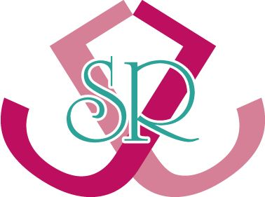

| HEARTBEAT－心音－ (純愛ジュールＲ) | |
| 奏井れゆな | |
| 純愛ジュール書院 (2019) | |
「今度の夏休みに予約をしておこう。来年、三年生になって受験、もしくは就職活動をするにしても、何かあったらそれだけ遅れることになる。これ以上、確立を待ったところで負担がよけいにかかってしまって、最悪のことを
淡々と宣告された。軽々しく云っているわけでも、冷たいわけでもない。むしろ、長い付き合いだからこそ、あたしのことを心配している。
わかっている。
けれど。
まだ愛されたこともないのに。
そう......思った――。
＊
『生徒 立入禁止』
そう書かれた看板がぶら下がっている鎖をくぐり、
新入生の入学式を明日に控えた今日、日差しはまだやわらかく、風は少し冷たい。
幸いに
四方を囲んだフェンスは一メートルを優に超える。心音であれば顔がやっと出るかというその高さに、長身の
この季節なら定番はスーツ姿だろうに、昼休みだからなのかジャケットを脱いでいて、ほんの少し近づきやすい気がした。そのジャケットはすぐ脇のフェンスにかけられている。薄いブルーのシャツは春の
心音は忍び足で近寄った。わずかにウェーブした髪がシャツの襟にかかっているところまで見えるようになると、ちょっと息を吸いこむ。
「先生、見下ろす桜もきれいだよね」
いきなりで背後から声をかけたにもかかわらず、驚きもせずに
颯斐の視線が、まっすぐな黒髪を伝って胸までおりた。腰まで届きそうな髪は、色の白さを強調するように心音の顔を縁取っていて、胸の上下とともにかすかに揺れる。
「おまえ、息が荒いぞ」
「階段て苦手」
「体力ないな」
颯斐はまるで心音が〝普通〟であるように云った。
「あたしが病人だって知ってるでしょ。体力なくてあたりまえだよ」
「......特別扱いする必要あるのか？ 普通に生活できてるだろ」
「......先生の『普通』って何？」
「食う、寝る、息をするってのはどうだ？」
心音はぷっと笑った。
「先生は〝吸う〟もないと普通に生活できないんじゃない？」
心音は颯斐が持っている
颯斐は肩をすくめてかわした。
「先生、どうして驚かなかったの？」
「おれがここを陣取ってから、屋上を見上げたのはおまえがはじめてだ。来るだろうって思ってた」
「なんだ、つまんない」
「おまえの考えることくらい簡単に読める」
そう単純ではないかもしれないのに。
「視線を感じたのって云ったら？」
颯斐はふっと
「人間てさ、意外に見上げることないんだなってわかった」
心音の中途半端な質問には答えず、颯斐は冷めた視線をフェンスの向こうにやって云った。
心音は颯斐の視線を追って見下ろしてみる。
まっすぐ先には正門があり、校舎へと続く道脇には桜の木が植えられていて、それらはもう散りかけている。
ほんの数分前、生徒があまりいないなか、桜の見納めをするように心音はそこに立って桜の木を見上げていた。その先に颯斐を
右のほうに視線を移動すると、グラウンドに散らばる男子生徒たちがサッカーをして遊んでいる。三階という高さからの見晴らしはいいけれど、立ち入り禁止という先入観があってなのか、見上げる生徒はいない。
「先生、好き」
視線を感じたのは本当。勘違いでも。
あたしに降り注いだ最後のチャンス。そのチャンスをくれたのは颯斐本人。
そこにある意味に
タイムリミットは夏休み前。
「こだわってるとは思わなかった。勘違いさせたのなら謝る」
端整な顔を心音に向けることもなく、グラウンドを見下ろしながら、あのときの医者のように颯斐は淡々と退けた。残酷にも、ふっ、と軽くあしらうような笑みさえ漏らした。
確かに始まりだったけれど。
「こだわってなんかない、ただ好きなだけ」
「卒業するときに告白してくる奴はよくいるけど、なんでおまえはこの時期なんだ？」
颯斐は微妙に話を
心音だけではない、と暗に含め、よくあるパターンだと片づけようとしているのなら、颯斐はいまの心音を甘く見ている。
「あたしが、いま、だと思ったから」
覚悟していた颯斐の反応は思っていたとおりだったけれど、それでも心音は泣きそうなくらい傷ついた。
でも、あきらめない。
愛されたいってあたしの躰が叫んでいる。
いつも冷めた視線で、何があっても冷静すぎるほど
一年前の一学期終了間近。
成績表の基準の一環として、四時間めの体育の時間は体力テストだった。
＊
心音はグラウンドを見下ろす場所で、木陰の芝生に座りこみ、五十メートル走のタイムを計っているクラスメイトたちを眺めた。
時折あがる歓声に心音は少し
心臓に一つ穴の開いた
けれど、何かあったら面倒になる。だから、やらせない。
こんな中途半端な心臓、どうせなら壊れちゃえばいいのに。そう思いながら自分の胸を
そしていま、ふいに心音の握り
「走りたいか？」
驚くよりも、自分の手をつかんだ手に戸惑いながら見上げると、そこにいたのは担任の相田だった。
「......きついことやらなくていいからいいよねって云われます」
心音は笑いながら答えになっていない返事をする一方、いつもと同じ声が出せていることにほっとした。
相田が手を放して隣に座った。つかまれていた手の
中学からの友だちは、高校生になってはじめての担任が相田であることをうらやんでいる。二十五歳という若さ、プラス容姿文句なしという条件から群がる生徒は数多く、それを少しでも避けようという努力なのか、相田の姿勢からは常に一線が見える。
「タイム、計ってやろうか」
「先生、授業は？」
「今日はこの時間の受け持ちなし」
「ジャージは必要ないからって持ってないし」
逸れっぱなしの会話に相田は含み笑いをする。
「そのまんまでいいだろ」
「怒られますよ？」
「だれに？」
「校長先生とか、ウチの親とか」
心音の親も心配性で、いくらやれると主張してもやらせてくれないことのほうが多い。姉とは五つ年が離れていて、二人めを切望していた母は特に、やっと生まれてきたのだからという気持ちがあるのだろう、少なくとも躰のことに関しては過保護すぎるのだ。
「そんなのが怖くて、おれがこんなことを云いだすと思うか？」
そう云われても迷って黙っていると、授業の終わりを告げるチャイムが鳴った。グラウンドでは解散のかけ声があがる。
「迷惑かけたくないからいいです」
云った直後、立ちあがろうとした心音の肩を相田が押さえた。
「待ってろ」
相田は云うが早いか、グラウンドから階段をのぼってやってくる体育教師のところへと向かった。
どんなやりとりをしているのか、体育教師はしきりに小さく首を振る。それが縦に動いたかと思うと相田は一礼を返した。戻ってきた相田の手にはストップウォッチが握られていた。
「暑いけど大丈夫か？」
座っているから相田の顔はそびえるような位置にあって、心音は首をのけ反らせた。見えた表情は本気を示している。
「先生のほうが......大丈夫ですか？」
「責任はおれが持つって云ってる」
相田の言葉にも真剣さが聞きとれて、心音は思わず――
「やる！」
と、そう答えていた。
相田のくちびるが片方だけ上がって、いつも見せているような飾りではない笑みが宿った。
さきを行く相田を追って、久しぶりに心音はグラウンドに入った。
すでに生徒たちは着替えにと校舎内に消え、さらに昼休みになったばかりでグラウンドに出ている生徒もいない。ふたりだけだ。
スタートラインに心音を立たせ、相田はゴールに向かう。
「いいか？」
「はい！」
返事をするのと同時に右手を上げると相田がうなずく。
「用意、スタート！」
その声に
「大丈夫か」
さほど心配しているふうでもない口調で声をかけ、相田が横にかがんだ。心音は浅く息を繰り返す。
「平......気」
「浅賀、深呼吸だ」
相田の手がその言葉と同時に、左寄りの胸の上とその反対側の背中に当てられた。深呼吸を繰り返して、やがて鼓動が落ち着くと相田の手が遠のく。
理性が戻り、かわりに今し方の相田の行為を意識してしまう。心音の鼓動は、走ったこととは別の理由で大きく
「......何秒でした？」
「十四秒」
心音がタイムにこだわっているわけもなく、ただ、戸惑っていることをごまかすためにわざとがっかりしてみせた。立ちあがりかけた心音の腕がつかまれる。支えられているだけとわかっているのに、触れられたことにまたどきっとしながら一緒に立った。
「小学生よりひどい」
「それでもがんばったんだからそれでいいだろ」
「ありがとう、先生」
素直にうれしさを笑みに込めて心音が見上げると、相田の瞳がはじめて見る表情を浮かべる。なんだろうと心音が首をかしげると、相田はつと目を逸らすように校舎を見やった。
「行くぞ」
結局は表情を読むことはできず、相田はあっさりと声をかけ、先立って行った。
そのあと、なんともなく五、六時間めをすごしたけれど、ホームルームが終わり、いざ帰るというときになって躰が疲れを主張しているのか、心音は席から立ちあがれなかった。
前の席に座った友だち、
「大丈夫か」
と至って冷静に
「大丈夫です。このまま......少し休んだら治ります」
「水梨さん、ジャージの上、持ってるか？」
「はい」
「ちょっと貸してくれ」
真奈が手渡すと相田は机をずらし、心音の腰にジャージの袖を巻きつけて結ぶ。
「立てるか」
「あたしが手伝うよ」
返事をするまえに真奈が横に来て、
「先生っ」
「保健室に連れていくだけだ」
心音が小さく叫ぶと、相田はなだめるようにつぶやいた。
「みんな、用事ないんなら早く帰れよ。水梨さん、浅賀さんのバッグを持ってきてくれないか」
ほかの生徒たちに呼びかけたあと、相田は真奈に声をかけた。
「はい！」
真奈の返事は上ずっている。普段ならからかうところなのにいまは余裕がない。
保健室へ行くまでの間、すれ違う生徒たちの視線を感じてよけいに鼓動が跳ねる。心音は隠れるように相田の腕に顔をうずめ、ぎゅっと目を閉じていた。
保健室に入るとだれもいなくて、心音は空いたベッドにおろされる。相田は不在の保健師を探しにいった。
ついてきた真奈はベッドの脇にバッグを置くと、心配そうに少し
「心音、大丈夫？」
「うん。ちょっと疲れただけ」
「あたしもいま、心臓ドキドキしてるよ」
真奈は興奮ぎみだ。それが心音を笑わせることになって少し落ち着いた。
「明日、学校に来る勇気ないかも」
「いいじゃない。役得ってことで」
「役得かな......」
「そうだよ。プラスマイナスゼロになるようなこと、あってもいいじゃない？」
「いまはプラス？」
「え、マイナスなの？」
真奈は信じられないという顔つきで心音を見た。
「ううん。今日、プラスになった感じ」
「何、それ！」
真奈が吹きだして、釣られるように心音も笑った。
その後、保健師に診てもらい、大したことはなかったものの、相田から連絡を受けた母は慌てて学校へやってきた。心音が大丈夫と訴えても、心配性の母は病院へ連れていくと云い張り、相田が送迎を申しでた。
「普段やっていなかったせいでちょっと心臓がびっくりしただけですよ。持久走は控えるべきですが、五十メートル走くらいだったら心音ちゃんの場合、問題ないんです。何度も云っていますが、制限しすぎる必要はないんですよ。相田先生からも入学後に連絡をいただいて、指導表を基に病状の説明をしたのは私です」
経緯を聞いた医者は母に云い聞かせた。
それでも母は納得せず、家までまた送ってくれた相田を玄関先で散々なじった。
「お母さん！ もういいっ。それ以上云ったらあたし、もう病院も学校も行かない！ ずっと家で寝てればいいんでしょっ」
相田が何度も頭を下げるのを見て、心音はたまらず叫んだ。
「浅賀さん、いいんだ」
そのなだめた声も母の耳には入っていないのだろう。はじめて自分に向けられた怒りに、母は
大学生である姉の
「心音、先生を見送ってきて」
都は心音に声をかけると、母を無理やりリビングへ連れていった。
「おれは大丈夫だ。気にするな。責任取るって云っただろ」
笑みすら浮かべ、相田の声音は穏やかだ。
「先生、ごめんなさい。なんにもできなくて......してもらってばかりで......そんなあたしが甘えちゃいけなかった......」
抑えきれずに涙が
「浅賀の甘えじゃない。おれがしてやりたいって勝手に思っただけだ。泣かせることになって悪かった」
いつもの冷たい印象が消え、低くやわらかく響く声がそう
涙越しに見た瞳はまるで海の底にいるようで、
それは気のせいかと思うくらい刹那の出来事だった。
「明日はちゃんと学校に来いよ」
涙が止まるくらいに驚いて見つめ返す心音に、相田はなんでもなかったように教師らしいことを云って玄関を出ていった。
相田の腕の感触がしばらく消えなかった。
その日、母とは折り合いをつけ、学校に苦情を持ちこまないよう約束させた。
それから心音は颯斐を見ていることが多くなった。
けれど、その視線が合うことはあまりなく、それはつまり、逆に避けられているのではないかと思った。
冷めた瞳に以前より太くなった一線が見えて、心音からは声さえかけられなくなった。
「いま、ってなんだ？」
颯斐は振り向いて、
「いまって、いま。だって、明日なんてわかんないし。きっと先生は考えてないだろうけど、先生よりはあたしのほうが明日には死んでる確率って高いよ。明日の朝、まだみんなが寝てるうちにジョギングしたいなって......その一時間後には道路に蒼くなって転がってるかもね」
心音はちゃかして云った。
颯斐は目を細めて心音の真意を探ろうとしている。
「何があった？」
「何もない。強いて云えば、先生と会いたいなって思った。担任してる学年は違うし、数学の受け持ちもないし全然、会えないから」
進級するときにクラスメイトのシャッフルはあるものの、学校間異動がないかぎり、普通なら持ちあがりになる。そんな慣例にもかかわらず、颯斐は再び一年を受け持った。
見ることさえ拒絶されたようで、心音にはショックなことだった。
自意識過剰に違いなくても、だからこそ、いまとなっては
颯斐は黙りこんでいる。
「先生、深刻に取らないで。あたしは先生に恋してるんだから、少なくとも付き合ってくれるまではジョギングなんて間違ってもしないよ。あ、でもあんまり応えてくれないようだったら、ジョギングしたいって誘惑に負けちゃうかも。じゃあね」
校舎のなかに入って屋上のドアを閉めたとたんに心音の緊張が緩んだ。手がふるえて目が
そう思ったのは二週間前のことだ。
＊
二年生への進級を控えた春休みのさなか、いつか、と思っていたことはいきなり現実になった。
「お母さん、あたしと結婚してくれる人、いるのかな」
サラリーマンの父はほとんど毎日のように帰りが遅く、いつものように母と都と三人で夕食を取っているとき、唐突に心音は訊ねた。
昨日、宣告を受けて以来、心音は口を
「......いるわよ。心音は可愛いんだから」
母は困惑しながらも、親のひいき目を最大に利用して断言した。
「でもね......病気のこととか傷のこととか、人を好きになるたびにいちいち云うのって......タイミング考えたりとか面倒くさい」
「心音......」
「心臓、止めちゃうんだから万一ってこともある。失敗したらそのまんまだし」
そのひと言は母には効いたようで目を潤ませた。母が、心音を健康体で生めなかったという罪悪感と闘っているのを知っている。だからこそ、過保護に――いや、正確には神経質になっている。
「だからね、お母さん、お願いがあるの」
「何？」
「夏休みまで、あたしの思うとおりにさせてほしいの。そしたら、ちゃんと手術を受ける」
「何がしたいの？」
「相田先生のこと、好きなんだ」
予想するはずのない告白に、母は疑惑と驚きに目を丸くして心音を見つめる。
「まさか先生といままでずっと......」
「違うよ。むしろ避けられてるかもしれない。あの日から」
心音は母の云わんとするところを察して否定した。
「先生に迷惑がかかるでしょ」
あの日は痛烈だった母も数日たつと冷静に考えられたらしく、颯斐に対して謝罪したという。それがきっかけで、心音に対する母の口出しはエスカレートすることはなくなっている。
「わかってる。気をつけるよ。先生が受けいれてくれるなんて思ってない。でも、手術を受けるまえに素直に恋したい」
「お母さん、心音の思うようにさせたら？ あたし、心音の気持ち、わかるよ。それにあの時の先生って云い訳一つしなかった。あの先生、心音に応えても応えなくても誠実に接してくれそうじゃない？」
都がフォローすると、迷いが消えないようでいながらも母はうなずいた。
＊
心音はわななく息を吐いて、屋上のドアにもたらせた背を起こす。
人の弱みを利用するのは後ろめたい。
ごめんね、お母さん......先生。
そっとつぶやいて階段をおりた。
＊
心音が告白してから一カ月をとうにすぎた五月の半ば、もうすぐ中間テストが始まる。
昼休みに屋上で颯斐と会うのは、雨の日以外、ほぼ日課のようになっている。
拒否という意思を示すのならここに来なければいいのに、けっして拒まず、いつも心音よりさきに所定の位置を陣取っている。そのくせ自分から話しだすことはなく、心音が
「先生、どうして教師やってるの？」
「なんで？」
「生徒に冷たい」
颯斐は外に向けていた視線をちらりと心音に移し、また外へとやって笑った。
「人間観察が趣味って云ったら？ 教師やってると、大人にしろ子供にしろ、材料豊富」
「......趣味悪い」
「そういう奴を好きになるおまえも趣味悪い」
颯斐がすかさず切り返すと、心音は眉間にしわを寄せた。
「自分でも思うよ。冷たいのにどこを好きになっちゃったんだろうって」
「おまえ、冷たいってよく云えるよな。本当に冷たい人間だったら放っておくだろ」
「じゃあ、生徒と教師って立場じゃなかったらどうした？」
「その手の仮定の問題には答えない」
生徒と教師じゃなかったらもっと簡単だったのに。とはいえ、生徒と教師でなかったら会えなかったかもしれない。
心音は爪先立って、フェンスから少し顔を出すと、颯斐を斜めから覗きこむように見上げた。
「先生、カノジョいるの？」
「いたら、あきらめるか？」
「ううん！」
「なら、答えない」
「答えないことばっかり。ずるい」
「ずるいのはおまえだ。おれを脅迫してる」
颯斐は横顔を向けたまま、容赦なく云い返した。
それを承知でやっているのに、それでも心音は淡々とした、ともすれば責めるような口調に傷ついた。
「帰る」
唐突につぶやいて、心音はドアに向かった。
颯斐はゆっくりと振り向いて心音の背を追う。
心音は気づかないまま校舎に入ると、喉に詰まりそうになった、熱く焼きつくような
待ちくたびれてスマホを覗き、時間が夕方の四時を示しているのを確認したのと同時に、エレベーターの到着を知らせるブザーが鳴った。
まもなくの
マンションの廊下には雨が吹きこみ、その雨音に紛れるようにかすかな足音が近づいてきた。足音が目の前に止まるまで顔は上げなかった。
「浅賀、ここで何してる？」
『ずるい』と云われてから、屋上へ行くのはやめた。それ以来、颯斐にまともに会うのははじめてだ。
「会いたいって思って来ちゃった」
心音は颯斐を見上げて何事もなかったように明るく云った。
日曜日にどこへ出かけたのか、視線を上げていくにつれて颯斐がスーツ姿であることに気づいた。ジャケットの肩先と髪に水滴がついている。
「
颯斐は確認する必要もないほど降り続ける雨にちらりと視線を走らせ、また心音に戻した。
「だから、部屋に入れてくれるよね？」
「すぐ帰れ」
「傘、持ってきてない」
「じゃ、貸してやる」
ポケットから鍵を取りだして颯斐が玄関を開けると、脇に避けていた心音は隙をついてすかさずなかへと入り、ミュールを脱いで部屋に上がりこんだ。
「浅賀！」
ふいをつかれた颯斐が心音の背後から怒ったように名を呼んだ。
「ずっと立ちっぱなしだったから疲れちゃった。少し休んでから帰る」
リビングだと見当をつけて入った部屋は短い廊下の右側にあって、キッチンと一緒になっている。散らかっていることはなく、颯斐の姿勢と同じく整然とした印象を受ける。普通の男の人と違うのは、キッチンとは反対の隅にある本棚に、数多く本が詰まっていることくらいだろうか。といっても、男の人に免疫があるわけではなく、基準はあくまでも心音の父親であり、まず、父がこんなに本を持っているということはない。
心音はリビング側に置かれたソファにずうずうしく座った。
「どういうつもりだ」
追ってきた颯斐が責めるように目を細めた。
「屋上に来ないからってほっとしてたでしょ？ 云っとくけどあたしは本気だし、けっこうしつこいの」
颯斐は心音を
心音は目を瞬く。が、不安に思うまでもなく、そう時間もたたないうちにＴシャツとカーゴパンツに着替えた颯斐が戻ってきた。夏場になるとさすがにジャケットは着ていないが、学校ではほとんどさっきのような固い
テーブルを挟んで心音の反対側に行った颯斐は、横顔を見せて座ると煙草を
せめて戻ってきてくれたことだけでもよしとして、しんと静まったなか、心音はおもむろに立ちあがった。どうせ無視されているなら、と住み
寝室と思われるもう一つの部屋にはさすがに入れなかったが、覗いたバスルームの洗面台にもキッチンにも女性の気配はない。
宣言したように、心音は颯斐にカノジョがいるとしても引くつもりはない。それでも
颯斐がそうさせていないのなら話は別だけれど、たぶんカノジョがいて、カノジョが自分の物を置いておきたいと思ったら勝手にさせているだろう。
颯斐は冷たく見せているが、その実、あの日のようにすごくやさしくて寛容なことを知っている。ずっと颯斐を追ってきて、颯斐自身は趣味とちゃかしたけれど、一線を置きながらも生徒のことをよく見ていることも知っている。
心音ができることはやりたいと思っていることを――例えば走りたいと思っていたことを理解できたように。
リビングに戻るとソファには座らず、颯斐のすぐ目の前の床に正座した。
「何があった？」
告白した日と同じ言葉で颯斐は訊ねた。今度は無視せず、その瞳はまっすぐ心音に注がれる。
「今日はどこ行ったの？」
「......友だちの披露パーティ」
「結婚？」
自分の質問を無視された颯斐は、眉間にしわを寄せつつ無言でうなずく。
心音は目を逸らした。
「結婚かぁ......先生、あたしって普通？」
「普通、自分の教師のところへ押しかけたりするのか？」
再び視線を戻し、少し上にある颯斐の瞳を見つめた。
「じゃあ、特別扱いして」
心音は颯斐の空いた左手を取って、何をするかを悟られるまえに自分の左胸に当てた。
「何をしてる？」
心音を
「先生に愛してもらいたいの。躰だけでもいいから」
「......どうしたんだ？ おまえはこんなバカげたことする奴じゃないだろ？」
そう云いながらも颯斐が手を引かないことに、心音は希みを抱く。
颯斐の手を放し、心音は伸びあがるとそのくちびるにキスをした。押しつけるだけの不器用なキスはすぐに両肩をつかまれて押しのけられる。
「浅賀！」
「......だめ？ だれにも云わない。死んでもあたしの秘密にしておくから」
答えることもなく、颯斐は探るように心音を見つめた。つかんでいた肩から手を放すと、颯斐はつと顔を逸らした。少しうつむいた横顔からでも表情が険しいのがわかる。
「......死んでも、ってなんだ？」
「ずっとってこと」
横を向いたまま訊ねた颯斐に心音が答えると、颯斐はゆっくりと瞳を心音に向ける。
「引き返せるわけないだろ......」
迷うようにそうつぶやきながらも、颯斐の両手が心音の顔に伸びてきた。
「キスはこうやるんだ」
首もとを支えると同時に颯斐は心音を引き寄せた。
くちびるがやわらかく触れ、次第にやさしさよりは熱が大きくなっていく。颯斐の舌がくちびるに触れると、息を詰めている苦しさに耐えられなくなって心音の口が開いた。待っていたように颯斐は舌を差しいれ、口内を深く探りだして心音を
遠慮のない激しさに心音は
それでも颯斐は心音を離さず、逆に左手でしっかりと頭の後ろを押さえたあと、右手で左側のふくらみを覆った。
......んっ。
心音の鼓動が怖いほど大きく加速していく。気づいた颯斐がくちびるを離した。
瞳と瞳が交差する。
颯斐の瞳は冷たさがなくなって、あの日と同じ表情を浮かべている。それがなんなのかは、あの時もいまも心音にはわからない。わかっているのは颯斐が応じてくれたこと。
互いに見入ったまま、心音は息を切らして浅く呼吸を繰り返した。
「深呼吸だ」
言葉もまた同じく、そして、左の胸には颯斐の手が重なったままだ。その手の中、心音の鼓動がだんだんとおさまっていった。
「キスだけでこうなるんなら、セックスしたらどうなるんだ？」
含み笑いをしながら颯斐はつぶやいた。
「......大丈夫」
心音が答えると、本当か？ と問うように颯斐の眉が上がった。次には、颯斐の右手がつかむようにして左胸を
「先生っ」
心音は大きく息を呑み、再び鼓動がせわしくなった。
「颯斐、だ」
それは教師というフィルターが放棄された瞬間だった。
「......颯......斐」
そうつぶやくと心音は目の前の胸に額をつけてもたれかかった。颯斐は左手で心音の腰を抱き、首もとにくちびるを当てる。
薄いコットンのチュニック越しに、左の胸がやむことなく撫でられる。だんだんと熱がこもり、そこだけが別の生き物のように大きくふくらんでいく感覚に襲われた。
「先生......胸が......熱い」
「伝わってくる」
持ち主にさえ
うつむいているのが苦しくなって、心音は颯斐の肩に頬を預けて少し上向いた。
颯斐の耳に心音の
心音が、もっと、というもどかしさを感じはじめた頃、颯斐は胸から離れ、かわりに心音の躰をすっぽりとくるんだ。心音が疑問を感じるくらい、颯斐はそのままでいた。
「せん......颯斐......？」
「おまえはどれくらい覚悟があるんだ？」
耳もとで颯斐が訊ねた。
「覚悟って？」
「まさか何も考えてないわけじゃないだろう？」
「......迷惑をかけるつもりなんかない」
「よく云うよ。誘惑自体、迷惑なことだろ」
「ごめん......なさい」
「......謝る必要はない。拒絶しきれなかったおれも同罪だ」
「......いま......しないの......？」
「けしかけるな。急ぎたくない」
「......」
完全と不完全をあたしは引き換えるの。いま、でなければ――。
応えてくれた日から、休日は颯斐の時間が空いていればマンションに会いにいった。
ただ、それだけで何も進展がない。キスさえも。
どこに真意があるのか、颯斐が距離を置こうとしているのがわかった。一年前と同じようにまたそれ以上に近づけない一線が見える。
そして七月に入ってすぐ、病院から電話があった。
順番待ちに空きが出て心音が優先され、十日後に入院、そしてその一週間後に手術と云われた。
怖い。まだ愛されていない！
無傷の躰が叫ぶ。
それから泣きそうなくらいに心音は苛々している。
颯斐には話せない。受けいれてはくれても、自分から連絡をすることのない颯斐へのわがままは、手術までと決めていた。
「心音、大丈夫？ なんだか最近ヘンだよ。ボーっとしてる」
放課後、教室を出て廊下を一緒に歩きながら、真奈は心音を向いて首をかしげた。
「そう？」
「うん。何かあった？」
「内緒にしてくれる？」
「何？」
「来週、入院が決まったんだ」
声をひそめて云うと、真奈はびっくりして心音を見つめる。
「入院て......もしかして手術!? 」
「そう。だれにも云わないで。ちょっと早く夏休みに入るだけ。順調にいったら三週間で退院できるし、夏休み終わったら普通に出てくるよ」
「そっか......学校には？」
真奈は自分のことのように落ちこんだ様子で訊ねた。
「だれにも云わないつもり。真奈は云わなかったけど、がんばれって云われるの、嫌なんだよ。がんばりますって簡単に答えられるほど、あたしはまだ覚悟できてないし」
「相田先生にも？」
「......なんで相田先生が出てくるの？」
真奈は突然、颯斐の名を出し、心構えもなかった心音は一瞬だけ言葉に詰まった。
「なんとなく。二年になって最初の頃、昼休みはどっか消えちゃうし。探偵しちゃった。気になるじゃない。それに最近、心音の雰囲気が大人っぽくなったというか、まえとちょっと違ってるし、うまくいったんだなってわかるよ」
自分がそんなふうに見られていることを不思議に感じながら、心音は首を横に振った。
「違うんだよ。ホントにうまくいったんだったら真奈にも打ち明けてる。脅迫してるの。付き合ってくれなかったら死んじゃうよ、って」
真奈は目を丸くする。
「そんなつもりはないよ。手術までに一回くらい普通に恋したかったんだ」
「心音......」
「だから相田先生にも云わない。ごめんね、黙ってて」
「いいよ。とにかく、手術も先生のことも応援してるからがんばって！ ......あ、云っちゃった」
真奈が困ったように首をすくめ、それが子供っぽくて心音は笑った。
すると、ちょうどそのとき、下駄箱のところに颯斐を見かけた。学校では階が違っているせいで、颯斐とはすれ違うことすらめったにない。
颯斐も心音に気づき、それだけではなくこっちへと歩いてくる。
「どうかしたか？」
互いに歩み寄る形で合流すると、ほかの生徒に対してと変わらず冷めた声音だったが、めずらしく颯斐が人前で話しかけた。わずかながらも心音の陰りに気づいたのかもしれない。
それは人間観察に
「どうもしてないです。大丈夫です」
心音が笑み混じりに答えると、颯斐が反応するまでに少しの間が空いた。それから心音と真奈を交互に見て、気をつけて帰れよ、と背を向けた。
真奈が
その時だった。
「いいよね。病弱だと特別扱いしてもらえて」
心音が上靴を靴に履き替えたとたんに向けられた言葉は、明らかに嫌味だ。
云ったのは、一年のとき同じクラスだった子だ。あのあと、よく冷やかされて妬まれた。この子からは特に。
颯斐のファンが多いのは知っている。それは受けいれられる。
けれど、『いいよね』。
そのひと言が心音の苛々を解き放った。
「そんなこと――」
「何がいいの!? 」
真奈がかばうのをさえぎって心音はその子に詰め寄った。
「何よ......」
その子はびっくりした顔になって後ずさった。
「こんな病気のどこがいいのっって訊いてるの！ いろんなこと制限されて思うように動けないし、検査、検査ってつらいこといっぱいされて、恥ずかしいカッコだってさせられるんだからっ。こんな実験体のどこがいいの!? いっつも引け目を感じてなくちゃならない。健康だと、それだけで自分がどんなにラッキーかってこと、全然わかんないんだよね!? 」
「浅賀さん！」
云い争いというよりは心音の大声に気づいたのだろう、颯斐が引き返してきた。それでも苛々は止まらなかった。
「こんな躰、かわれるんなら喜んでかわってあげるよっ」
こんな欠陥のある躰でなかったら、卑怯なことをする必要もなく、颯斐を困らせることもなく、堂々とぶつかっていけたのに。
「心音！」
「浅賀、走るなっ」
背後から届く真奈の声も颯斐の声も無視して心音は走った。泣いているせいでよけいにうまく空気を肺に取りこめず、まもなく校舎の陰に入って座りこんだ。
「心音」
追ってきた颯斐の声が頭上から聞こえた。すぐに追いつけるところまでしか逃げられない自分が情けない。
「......どうしよう......ばかみたいなこと......云っちゃった......」
息切れしながら心音は目を伏せて、後悔した言葉をつぶやいた。
「何を云われたんだ？」
「......病気だと颯斐に特別扱いされて......うらやましいんだって......」
「......声、かけなきゃよかったな」
颯斐がつぶやくと、心音はそうではないと云うかわりに首を横に振った。
颯斐は心音の正面にかがんでため息をつく。
「気にするな。あいつらもわかってるさ」
颯斐は心音のブラウスの胸ポケットに手を伸ばして、パステルブルーのハンカチを取りだすと心音の涙を拭った。
「颯斐、今度の土曜、海に行きたい」
「なんだ、唐突に？」
心音がいきなりプライベートな話題に変えると、颯斐は
「颯斐とセックスしたい」
支離滅裂の希望をまた口にした。うつむいて云った心音には颯斐の反応が見えない。普通なら気まずくなるような沈黙もいまは気にならなかった。それだけ
「学校で云うセリフか？」
しばらくして、ハンカチを手渡しながら颯斐は可笑しそうに返事をした。それから大きな手が、心音の長い髪を頬から肩の後ろへと払う。
「気をつけて帰れよ」
心音を独り残して颯斐は立ち去った。
答えはくれなかった。
「万が一、知っている人に会ってもすぐにはわからないようにしないとね」
そう云って、姉の都は心音の長い髪にホットカーラーを巻いた。
「心音、口、少しだけ
都が真剣な
颯斐とはじめての屋外デートと知った都は、心音自身よりも張りきっている感じだ。リップは自分で塗れると主張したが、都のやらせてほしいという主張には負けた。幼い頃のワンシーンと同じように、心音は都の着せ替え人形と化している。
「心音の肌はきれいだからファンデは必要ないけど、日焼け止めだけ塗って、あとはアイシャドーとマスカラをちょっとだけね」
都にされるがまま、心音はおとなしく従った。メイクが終わり、ホットカーラーを外すと、都は心音の髪を
「わお。大人っぽくなった。二十歳くらいには見えるかも」
「大人っぽくなって二十歳なの？」
心音は少しがっかりする。
「まあ、見てみて」
見てのお楽しみとそれまでの変化を覗けなかった心音は、姿見の中の自分を確認する。すると、鏡に映った心音が驚いたように見返した。長い髪がうねるように顔を縁取り、マスカラと薄紫のアイシャドーが神秘的に見せている。
「お姉ちゃん、すごい。高校生には見えないよね」
心音が喜んで云うと、都は満足げにうなずく。
「うん、我ながら傑作。楽しんでくるんだよ。ただし――」
「遅くなるときは連絡すること！」
心音がさえぎってあとを引き継ぐと――
「そのとおり」
と答え、都はまたやってしまったとばかりに首をかしげた。
昼をすぎて最寄りの駅前の歩道で待っていると、迷いなくブルーグレイの車が心音の前で止まる。
颯斐が運転席から手を伸ばしてドアを押し開け、乗るよう促した。
「あたしだってすぐわかった？」
「ああ」
「なぁんだ」
颯斐が車を出すなり訊ねてみたが、その返事に心音はがっかりした。
「わかっちゃまずいか？」
「そうじゃなくって......」
心音が顔をしかめて首をかしげると、颯斐は前を向いたまま短く笑った。
「見た目はいつもと違って大人びて見える。けど雰囲気はすぐには変えられないだろ？」
そう云われれば反論もできない。
「......びっくりすることってある？」
「おまえに誘惑されたときはびっくりした。というより、おまえにはいつもびっくりさせられてるよ」
「全然、そう見えないけど」
「じゃあ、おれはうまく振る舞えてるってことだな」
颯斐は横目でちらりと心音を見やり、意味ありげににやりとした。
ドライブは二時間くらいして海岸沿いの道に入った。片側は一面に海が広がっている。所々に設けてある駐車場をすぎていき、それが五カ所めになって颯斐は車を止めた。
梅雨はまだ明けていないけれど、今日は雲が多いながらも天気がよく、車を降りると夏を予感させる暑さを感じた。海の匂いを運んでくる風が涼しく躰を包む。
「天気よくなってよかった。てるてる坊主が願いをきいてくれたみたい」
「てるてる坊主か。懐かしいな」
「あ、子供だって思った？」
颯斐は笑って答えなかった。
抗議を受けるまえに颯斐は心音の手を取り、道路を横切った。
梅雨の合間の天気のよさと週末というせいか、露店がいくつか並び、海では泳いでいる人もいる。
砂浜への階段をいちばん下までおりると、颯斐がサンダルを指差した。
「脱いでたほうがいい」
「うん」
サンダルを脱いで砂浜に入ると、さくっと小さな音が足を包む。
「砂、熱くないか？」
「ううん。あったかい」
「持ってやるよ。砂遊びでもなんでも好きにやればいい」
颯斐は保護者然として云い、心音の手からサンダルを取った。
「子供だと思って甘く見てると痛い目に遭うから。あたしが知っていて颯斐が知らないことも、きっとたくさんあるよ」
「例えば？」
「え？ んーと......そう、さっきのてるてる坊主。晴れるまで顔を描いちゃいけないって知ってた？ 晴れたときにご褒美として目とかを描くんだって」
「へぇ、それは知らなかったな」
「だから今日は出かけるまえにちゃんと顔を描いてあげたよ」
「今日、天気が悪かったら来週に延ばせばいいだけだろ？」
「......そうだね」
颯斐が微笑しながら何気なく云った言葉は現実を思いださせ、心音の顔がわずかに曇った。
「どうした？」
ここでも見逃すことなく、颯斐の瞳からも笑みが消えかける。
「ううん、なんでもない。波が来てるところまで行っていい？」
笑顔に戻って心音がはしゃいだ声を出すと、颯斐はわずかに斜めに首を傾けた。太陽の加減か、その瞳が
心音は波が来るぎりぎりのところまで進むと、濡れないように膝丈のワンピースを巻きとってしゃがみこんだ。寄せてくる海水に触ってみるとまだ冷たい。
「海、好きなのか？」
「うん。なんとなく、海って嫌なことを洗ってくれる感じしない？ 海の波がどうやってできるかなんてどんな理屈で説明されても、自然のすごさってやっぱりすごくて、悩んでることとかちっちゃいなぁって思える」
波打ち際で寄せてくる波と戯れながら心音が云うと、颯斐は声を出して笑う。
「バカにしてる？」
かがんだまま、後ろのほうに立っている颯斐を振り返り、心音は怒ったふりをして訊ねた。
「いや、同感してる」
颯斐は否定したが、声にはからかいがひそんでいる。
「とにかく自然に触れると、なんだか気持ちがやさしくなれる。死んだら、絶対に海に
「人魚姫は悲恋だろ？」
「うん。颯斐は、人魚姫が
颯斐は口を
「その答えはさっき証明しただろ？ どんなに見た目が違っても喋らなくてもおまえだってわかる――心音、立て！」
「きゃっ」
颯斐が突然、命令すると同時に、いままでより大きな波が足もとを襲い、心音は悲鳴をあげながら慌てて立ちあがった。後ずさりして砂に足をとられ、よろけた心音を颯斐が素早く支える。服が濡れるのはかろうじて避けられたものの、足は砂
心音は颯斐に寄りかかった躰を起こして向き直った。
「大丈夫か？ なんかやっぱり高校生だよな」
含み笑いをした颯斐を見上げて、心音は軽く
「だから、なの？」
「何？」
「子供っぽいから抱く気になれない？」
「......子供のくせにヘンに大人びたカッコする」
颯斐はまともに答えず、視線が緩くカールした髪を伝いおりて素足まで動くと、またゆっくりと心音の瞳まで戻ってくる。
「似合わない？」
「いや、惑わされてる」
含んだ云い方をした颯斐は心音を見下ろしてにやりと笑う。颯斐は心音の首筋に触れ、そして、
触れられたところが、颯斐に伝わるのではないかと思うくらいに火照る。
「なんでこんなに胸の開いた服を着るんだ？」
「きれいなうちに見せびらかしておくの」
「なんだ、それ？」
答える間もなく颯斐の手のひらが服の下に潜り、ふくらみにかかると、心音は驚いてその手をつかんで止めた。
「だめ！」
「だめ？」
颯斐がおもしろがって問い返す。
「さきに進んでほしいんだろ？」
「だけど、こんなところでできないよ！」
人目を気にしつつ、悲鳴じみた声で心音が主張すると――
「普通、本気にするか？」
と颯斐は笑いだした。
驚きから立ち直るまえに、颯斐は少し身をかがめて心音の腰をつかみ、自分より高く抱えあげた。バランスを崩しそうになって心音は颯斐の肩をつかむ。颯斐は心音のヒップを腕で支えなおして安定させた。必然的にふたりの躰が密着する。
「相変わらず軽いな」
「颯斐、見られてるよ！」
叫んで手を突っ張り、離れようとする心音を颯斐はよけいに縛る。
「気にするほどのことじゃない。ちょっとじっとしてろ」
颯斐はちょうどの高さにある心音の胸に耳を当てた。
「颯斐っ」
「黙って」
囁いた颯斐の声は、さっきまでのふざけた様子と打って変わって真剣なものだった。
「海の音がする」
しばらくして颯斐がつぶやいた。
「......それ、心雑音だよ？」
「ノイズというよりは、深海にいるみたいだ」
「そう？」
不思議そうに訊ねると、颯斐は腕を解いて心音を地上におろした。
「ああ。嫌いじゃない......っていう表現は甘いな。そうじゃなくて......好きだ。愛したいくらいに」
「......あたしは......自分のは聴けないから」
瞳を大きく開いてやっとのことで答えつつ、颯斐を見上げた。どう受けとっていいのか心音が戸惑っていると知って、颯斐はふっと笑みを漏らす。
「まどろっこしい言葉は抜きで」
颯斐は心音の耳にくちびるをつけて囁く。
「心音とセックスしたい」
颯斐の返事は深海で聴くようにぼんやりと耳の奥に響いた。
自分が云いだしたのに、
一方で、颯斐は心音の首筋から不規則にふるえる脈を感じとって顔を上げた。
「大丈夫か？ いますぐって云ってるわけじゃない。おまえの準備ができたらでいいんだ。心音だけじゃなくて、おれもそういう気持ちを持ってると云いたかっただけだ」
「準備なんていらない」
心音はまっすぐ貫くように颯斐を見つめる。
ひたすらさがかえって何かを隠しているようで、颯斐はそのさきを覗こうと心音を見つめ返す。けれど、その瞳からは何も見取ることができず、逆に深海に
颯斐は心音に顔を近づけていく。それが誘いになっているとも知らずに、心音はゆっくりと目を伏せた。呪縛を解かれるどころか、逆に心音の瞳の中に閉じこめられた感覚に陥る。
颯斐のくちびるが心音のくちびるをかすめた。
「颯斐？」
颯斐の名を囁いた声はふるえている。颯斐は心音のくちびるに問いかけた。
「やめろ、それとも、もっと？」
「もっ――」
場所もわきまえない願いを聞き遂げないうちに、颯斐は心音の言葉を呑みこんだ。云いかけていたくちびるは閉じる間もなく、その隙をついた舌の侵入を許した。息を継ごうと心音の口が喘ぐように開けば、すかさずもっと深く入りこむ。
心音は自分がちゃんと立っているのかさえ不確かになっていき、颯斐の胸もとのＴシャツをしっかりとつかんだ。
颯斐は心音の首もとから手を離し、躰を支えようとその腰を引き寄せた。するとその時、
当てをなくして揺らぐ心音の頭を抱く。その肩にうなだれて額をつけ、颯斐は自身に呆れて小さく笑った。
互いの呼吸が落ち着いた頃、颯斐は顔を上げて心音を遠ざける。
心音は手を上げ、ようやく自分のものという感覚を取り戻したくちびるに触れた。
そのしぐさを追っていた颯斐の瞳が、少し腫れたように鮮やかに色づいたくちびるを認め、深く陰る。
「心音、帰ろう」
「......もう？」
首をかしげた心音の瞳には余韻が残り、潤んでいる。
「ここで押し倒されたいか？」
颯斐が
颯斐は洗い場へと心音を連れていく。心音は砂に塗れた足を洗うと、濡れた足を軽く振ってからサンダルを履いた。
「颯斐があんなふうに大胆だとは思わなかった」
「自分のことを棚に上げてよく云うな。誘惑に抵抗できなかっただけだ」
「それなら、いつもの冷静な颯斐と誘惑に負けちゃう颯斐とどっちが本当？」
「どっちも本当のおれ。人とか立場によって接し方が違ってくるのはあたりまえのことだろ？」
確かに付き合うまえの颯斐も、人前では『浅賀さん』と呼び、ふたりきりでは『浅賀』とか『おまえ』とか呼び方を変えていた。
「......それって......」
さっきの奔放な振る舞いは、それだけ心音に気を許しているという証明かもしれない。
「何？」
「ううん。うれしいって思って」
「行こう。家にたどり着くまでには頭が冷えてるよう願ってくれ」
颯斐の顔に浮かんだ、歪んだ笑みは自嘲だろうか――
「冷やさないでいい」
と、心音は即行で颯斐の自制を否定する。
「気絶しても知らないからな」
「死んでもいい」
駐車場に向かっていた颯斐はその言葉を聞き咎めて足を止める。心音もそれに
心音は向かい合って颯斐の手を取り、ふたりの関係を変えたあの時のように左胸に重ねた。
「颯斐の手の中ならこの鼓動が止まってもいい」
「なんでそんなことを云う？ 立場を放棄したのは鼓動を止めるためじゃない。その逆のはずだ。おまえは知らないんだ。おれが......」
颯斐は最後まで云わずに言葉を切った。
「颯斐が何？」
颯斐は答えず、心音が重ねている手の下で
颯斐はかがんで、そのかすかに開いたくちびるの間を
「帰ろう」
と、颯斐はまた囁いた。
車に乗るとエンジンをかけ、颯斐は運転席と助手席の間にあるボックスから煙草を取りだした。が、思い直したように戻す。
心音はそれに気づいて、シートベルトを引きながら颯斐を問うように見た。
「煙草、吸わないの？ 最近、吸ってるとこを見なくなった」
「躰に悪いらしい」
「いま頃知ったの？」
心音の瞳が可笑しそうに輝くのを見て、颯斐は片方だけくちびるを上げるというおなじみの笑みを見せた。こういう笑い方をするときは単純におもしろがっているか、もしくは何かを含んでいるか。いまはおもしろがっているというのは当てはまらない。そう考えると、ふと心音は思い至った。
「......あたしのため？」
「さあな。とにかく、やめようとしてる。まだ癖が抜けないんだ」
颯斐は認めなかったが、心音はうれしそうに笑った。
「普通に生活できる？」
ヘビースモーカーとまではいかないまでも、それなりに吸っていた颯斐をからかった。
「〝特別〟も悪くない」
颯斐は意味深に隙なく応酬すると、顔を近づけて心音のくちびるに舌を
シートベルトのせいで身動きもできない。シートに押しつけられ、苦しくなるほど探られて、逃げようがなく心音はくぐもった悲鳴をあげた。そうして颯斐がやっと顔を離すと、心音の口から悲鳴に似た吐息が漏れた。
「大丈夫か？」
そう訊ねた颯斐の息も荒い。
「颯斐のキス......好き」
心音が息を乱しながらも素直に答えると、颯斐は参ったというように声を出して笑い、しばらくハンドルに顔を伏せていた。
「帰らないと......ここで
颯斐は親指で心音のくちびるをなぞり、ふっと笑みを向けてから正面に直る。ドライブにシフトチェンジして車を出した。
帰り道、あえて他愛ない話を続けるなかでいつの間にか心音は眠っていたらしく、颯斐に起こされたときはすでにマンションの駐車場だった。
状況はわかっていても、眠っていたせいで心音はまだ完全に頭がまわる状態ではない。颯斐のあとをただついていったが、リビングに入ったとたん、はっきりと目が覚めた。
颯斐は立ち尽くした心音に気づくと薄く笑う。
「こっちまで緊張してるのが伝わってくる。かまえる必要ない。ああは云ったけど、今日にしろ、いつかにしろ、無理やり行動に起こすつもりはない。途中、コンビニに寄ったんだ。おまえがいつも買ってくるやつ。コーヒー、
颯斐はテーブルにコンビニの袋を置いてキッチンに入った。
心音はその姿を追う。
どきどきは止まらなくても、それと比べものにならないくらい颯斐に愛してほしい。
バッグを落として、その場に固まったような足をやっと一歩踏みだしてみると、ためらいが消え、心音は颯斐に向かった。
「颯斐......緊張は、してるけど......いまがいいの」
コーヒーメーカーをセットしていた颯斐の手が止まる。
「はじめてだと......緊張とは別に、いい気分ばかりじゃない」
「わかってる」
「後悔するかもしれないぞ？」
「そう思うかもしれないのはあたしじゃない。颯斐のほう」
「どういう意味だ？」
「あたしは負の要素、いっぱい持ってるから」
「このせいか？」
その意味を察して颯斐は心音の左胸に手を当てると顔をしかめた。
「先生と生徒っていうことも......」
「だから、心音。条件を考えられるくらいなら、どんな脅迫をされようが、おれはおまえに応じてない」
心音はその意味をしばらく考えた。
心音に見入る颯斐の瞳はまっすぐに注がれている。
「......颯斐、いま......して」
卑怯な手段で手に入れた恋は温かく誠実な場所にあり、いまはただ、素直に愛されたいと思った。
心音の潤んだ瞳に見入っていた颯斐はやがて――
「わかった」
と、くぐもった声で答えた。やりかけたコーヒーメーカーのセットもそのままに、心音を抱きあげてベッドへと連れていく。
「颯斐、シャワーを浴びなくちゃ......」
「そのままでいい」
心音をさえぎってベッドにおろすと、颯斐自身はベッドの端に座り、心音の左の胸に右手をのせた。
「つらかったら云ってくれ」
「云ったらやめるの？」
「いや、手加減する」
颯斐のくちびるは可笑しそうに歪んで、心音も笑いながら、うん、とうなずいた。
颯斐は左側のふくらみをくるむように撫でた。大きく開いた胸もとからその手が忍びこみ、熱くなった肌にじかに触れる。
とっさに目を閉じた心音は、一度大きく短く息を吐く。その開いた口を、颯斐は上体を折って襲った。触れたり離れたりを繰り返すキスの間、手の動きはやむことなく、胸先は隠せない反応を颯斐の手のひらに伝える。
颯斐はくちびるを離して心音を抱き起こすと、ワンピースを脱がせて下着まで、すべて取り除いた。
その間、心音は恥ずかしさに躰をこわばらせていた。鼓動は耳を貫きそうに大きくなっていく。また寝かせられると、反射的に躰を縮めてしまう。
「してって云ったくせに」
「......それとこれとは別」
颯斐はため息をつくように笑い、自身も服を脱ぎ始めた。しばらくはそうするところを眺めていたけれど、下半身に及ぶと心音は目を伏せた。
望んでいるときは必死で、こんなにどきどきするとは思わなかった。
きれいな躰を
そんな思いは、好きだという気持ちがなかったとしたら――自分の中に颯斐に対する気持ちがなかったら――生まれなかったかもしれない。
そう気づくと、いまにも壊れそうな心臓の痛みがおさまっていく。
全部を脱ぎ捨てた颯斐がベッドに上がり、心音の傍らに肘をついて横たわった。心音の膝頭に右手を当てて、立てた脚を伸ばさせる。胸に置いた手は躰の脇にどかした。
髪は海の中を漂っているように波打っていて、胸のふくらみにかかっている。控えめに隠した裸体はかえって颯斐を挑発した。心音の躰が羞恥心で桜色に染まるくらい、ゆっくりと目を這わせ、足先までたどった。ピンクのペディキュアをした白い素足は、人魚ではないことを証明している。
「颯斐」
困惑した声を受けて颯斐は心音の左手を取り、自分の胸に引き寄せた。
心音は導かれる手を目で追いながら、服の上からはわからなかった広い胸に視線を移す。触れた場所は硬く張り、頼れる強さを約束している。
「どうだ？」
「......ドキドキしてる」
「おまえと一緒だ」
「うん」
「恥ずかしがらなくてもいい。隠せないのは男のおれのほうだ」
心音は意味を察して照れたように笑い、颯斐は手をその頬に添える。
「反応も何も隠さないでくれ。そのままを見たい」
そう続けながら颯斐は、心音自らを妖しく隠していた長い髪を払った。
「うん」
返事を聞いてかすれた声で笑うと、颯斐は手を首筋に添え、剥きだしになった肌をゆっくりと撫でおろしていく。
右側の胸が颯斐の手に包みこまれると、心音の躰から力が抜けた。ゆっくりと確かめるような触れ方は気づかないうちに熱を
颯斐はわずかに開いたくちびるをふさぐ。飢えたような様で、欲深く口の中を貪った。心音は何度もこくんと喉を鳴らして、ふたりの絡み合った甘い蜜を呑み下す。
そして、颯斐のキスは唐突に首筋を伝いおりた。ふくらみがすくうようにつかまれ、
あ......っ。
心音の口から悲鳴じみた声が飛びだした。
物足りないほどやさしい戯れのあと、痛いほどに吸いつかれた。心音は音を立てて息を呑み、躰をくねらせる。
あ、ふっ......ぁ。
じんと、躰の奥が
颯斐が顔を上げると、わずかに紅潮した顔、そして濡れて鈍く光るふくらみが目につく。その胸を惜しむように撫でると手を下へと滑らせた。これまで隠ぺいされていた、だれも触れたことのないその場所に指先が潜る。そこは胸先と同じように熱く反応を
「颯斐っ」
逃れようと躰を上に引き、心音は叫んだ。
「大丈夫、きれいだ」
颯斐がなぐさめる。その言葉を当てにしながら、心音は手を伸ばして颯斐の首にしがみついて躰をゆだねた。
ゆっくりとやわらかく颯斐の指がそこを撫でると、意識はその動きに集中していく。くぐもった悲鳴と喘ぐ声が止め
やさしい指で弄ばれていくうちに恥ずかしさも忘れた。快楽に身を任せていた躰は、その感覚に堪えきれなくなってぴんと張る。
「任せればいい」
心音の感覚は颯斐にも伝わっていて、その囁き声は深く心底にも躰にも浸透していった。
んくっ......。
心音は深海に溺れた感覚に包まれ、急速に浮上し、陸に上がった魚のように躰が飛びはねた。
はっ......ぅ......ぁああ......っ。
痛みを伴っているかのような悲鳴が心音の口から漏れ、颯斐は
やがて、絶え絶えだった息も落ち着いて、心音の躰がぐったりと力をなくした。颯斐は顔を上げ、心音の頬にかかる少し汗ばんだ髪を払った。
「大丈夫か？」
「......うん。死んじゃうかと思った」
「はっ。のん気な口調だな。おれのほうがビクビクしていたかもしれない」
颯斐は可笑しそうに心音を見下ろし、左の胸に触れた。まだ余韻の残る躰はそれだけでぴくりとふるえる。その反応を楽しむように指先が
さっきまでの、思考を奪うほど追いあげていくやり方と違って、触れること自体を目的にしているようだ。時折、躰を眺める目が上がってきて心音の目と合う。くちびるの端にキス、そしてまた颯斐は躰に視線を這わせる。躰をよじりたくなる、ほのかな感覚は吐息に紛れる。
居心地がよくて、ずっとこうしていられたら――そう思ったことが、そうしていられない現実を還らせる。かといって、心音からどうやって動けばいいのかはわからない。焦れったくなるほど、いつまでたっても颯斐はさきに進もうとせず、心音はためらいがちに口を開いた。
「......颯斐は......？」
「負担をかけたくない。今日じゃなくても――」
「だめ！ いま、颯斐を感じたい。今度はあたしのこと、考えなくていいから。颯斐の思うようにして」
「心音......」
迷いを消し去れず、颯斐はためらうように名を呼んだ。
「......あたしの心臓が怖くて......気分じゃなくなった......？」
ふるえる声で訊ねると、颯斐は覆いかぶさるように心音を抱き、自分の反応を知らせた。
「逆だ。死にそうな悲鳴をまた聞きたいと思った。だから怖いんだ」
心音の耳もとで呻くように告げられた。ついさっき熱に満たされた躰の中心に颯斐の本意を感じる。
「大丈夫だよ。誘惑に負けた颯斐が見たい」
颯斐の含み笑いが心音の耳をくすぐる。思わず身をよじると颯斐が再び呻き、上体を起こして心音を見つめた。
明らかに誘惑の意思を宿して心音のくちびるが開く。
「引き返せるわけないだろ」
あの日と同じ言葉だったが、そこに迷いはなかった。
心音が目を閉じると同時にくちびるが触れた。
颯斐の脚が心音の脚を開く。その間に入り、颯斐はくちびるを離して躰を起こすと、心音の胸をそれぞれに手でくるんだ。心音は感覚の赴くまま身を投じ、口を開いて快感を吐く。
その素直さは、壊れるくらいに抱きしめたい、という相反した感情を颯斐の中に
颯斐は、躰のラインをたどるように右手をおろしていって、開いた脚の間に忍ばせた。心音は条件反射のように脚を閉じようとしたが、颯斐の躰が邪魔をした。
「思うようにしてって云った」
颯斐がつぶやくと、心音は目を閉じたまま少し顔を赤らめてうなずいた。
「颯斐......だめ......また......だから......お願い......」
心音は息を切らしながら途切れ途切れにつぶやく。こめかみに手が触れ、熱に
「わかった。けど、痛いのは取り除けない」
「うん。あたしはさっきちゃんとしてもらったから、今度は颯斐のばん。痛がっても自分を優先して」
颯斐は突かれたように心音のくちびるをふさいだ。またこくんと心音の喉が鳴り、その無邪気さが颯斐をどうしようもなく煽りたてた。
颯斐は自分の欲心に負け、熱が息づく中に浅く押し入る。心音は本能的にのけ反って躰を硬直させた。
颯斐の両手が腰から胸に這いあがり、やさしく、時にはつつくように胸先を撫でる。そこは敏感な場所だ、反射的にびくっと躰が跳ねて、その感覚がきつさを緩和させ、心音の躰は
心音の躰が波打ち、それに応えて颯斐の熱が深く大きく脈を打つ。忍耐力が奪われていく。尖った胸先は色濃く変わっていて、親指でひと際いたぶると、細い腰が跳ねるように持ちあがった。痛みが最小限に
心音は苦しそうに顔を歪めて呻き、手もとのシーツを強く握りしめた。逃れるように躰を反らしたことで、より深く体内は颯斐を呑みこんだ。
「大丈夫か？」
颯斐が心音の手をつかんで片方ずつシーツからほどく。あわせて躰が緩むと心音は目を開け、心配そうにした顔を見上げた。
「......うん。颯斐をいっぱいに感じる。颯斐は......？」
「いま、深海の中にいる感じだ」
颯斐はくぐもった声で答えると、心音の両肩の横で手をそれぞれに束縛してゆっくりと動きだした。
「力を抜いて」
颯斐が囁く。
その言葉に従うと、ゆったりとした動きが颯斐の感触を知らせて、
そして、きつさのなかに心地よさが生まれ始めた頃、いったん颯斐が躰を離した。その感覚に、心音はまた違った声をあげる。
「颯斐......？」
「避妊。これ以上、心音に負担かけるわけにはいかないから」
颯斐は少し待たせてから、再び心音の中に身を沈めた。
まだ慣れるには程遠く、心音は違和感に呻いたけれどつらくはない。颯斐の指先が鎖骨に沿い、それから躰の脇に手を這わせて撫でおろす。躰が波打つようにしなり、侵入された体内の奥深くも颯斐を確かめるようにうごめいた。
颯斐が緩やかな動きを再開してまもなく、突かれるたびにため息とも悲鳴ともつかない声が心音の口をついて出始める。それがさらに颯斐をせん動した。
「心音」
声は切実そうな響きを宿している。颯斐の限界を知って心音は手を伸ばした。颯斐が身をかがめてきて躰が合わさると、心音はその背中に手をまわした。互いの荒い息遣いがそれぞれの耳にかかる。
「あたしは大丈夫。思うようにして」
その囁きが颯斐の最後の理性を奪い、それでも残った
激しさを抑えることはかえって互いの存在を強調し、堪えきれなくなる。汗ばんだ躰がふたりを密着させ、まもなく心音の耳もとで颯斐のくぐもった声がした。
自分を優先して感じてくれたことは、颯斐が心音に気を許してくれたことの
どれくらいそんな時間がすぎたのか、颯斐が躰を浮かせて心音から抜けだしていく。離れる瞬間にも心音は小さく呻いた。躰の中心は
「重かったな」
「うん。でもいい感じだった」
颯斐が声を出して笑い、心音の頬にかかった髪を払った。
「疲れただろ。しばらく眠ればいい。これであのときみたいに病院行きになったら、なんて云い訳すればいいんだ？」
「セックスしてもいいかって、病院の先生には訊かなかったの？」
「訊けるか」
からかうと、颯斐は吐き捨てるように云い、心音はくすくすと笑った。下腹部の違和感に気をつけながらゆっくり躰を横向きにして、それから心音は颯斐に抱きつく。颯斐の腕も心音を抱き、しばらく互いの躰の感触に心地よく浸った。
「いま何時？」
「七時すぎたところだ」
「家に電話しておく。心配性だから」
「スマホ取ってくる。待ってろ」
そう云うなり颯斐は起きあがり、ベッドから足をおろして黒いボクサーパンツを身につけた。
「颯斐」
「何？」
ドアに向かっていた颯斐は心音を振り返る。ナチュラルリネンの色をした壁を背景に、斜めから見た颯斐の立ち姿に欠点はない。
「顔だけじゃなくって、躰もカッコいいんだね。なんだかずるい」
真面目に文句を云う心音を見て、颯斐はにやりとした。
「ずっと水泳やってるからな。
返事を待たずに颯斐は部屋を出ていった。
「やっぱりずるい。
複雑な気持ちで心音は独りつぶやいた。
すぐに戻ってきた颯斐はスマホを手渡し、心音が起きあがるのを手伝う。
ふと躰をねじってお尻のところを見ると、シーツに赤いしるしがあった。恥ずかしいけれどうれしいという、不思議な気持ちを覚えた。
心音はベッドの上にあったタオルケットを躰に巻きつける。思ったより疲れているのか、起きてみると躰が重い。
電話している間、颯斐はベッドの端に腰かけて心音を見守っていた。
「ちょっと遅くなるから」
心音はそう告げると、あとは「うん」という返事を繰り返すだけで手短に終わった。
「心配してるってわりに簡単だな。なんて云って出てきたんだ？」
「信用されてるから」
颯斐が
心音がわかっているのは、颯斐が逃げない、ということ。
「それより颯斐、写真、撮りたいんだけどいい？」
「写真て？」
「記念写真。顔は写さないよ。きれいなうちにここの写真を撮っておくの」
心音は自分の胸に手を当てた。
「なんだ、今日は？ きれいなうちにって云うの、二度めだな」
心音はすぐには答えず、かすかに笑った。
「だって、おばあちゃんになったら、しわだらけになっちゃうし......」
「まださきの話だ」
颯斐は呆れて口を挟んだ。
「とにかく写真。颯斐、ベッドに上がって手を貸して」
颯斐は要求のままに任せ、ベッドに上がると心音の背後にまわった。心音はタオルケットを落とし、颯斐の右手を取ると左の胸先がかろうじて隠れるくらいのところに置いた。右側は左の胸を覆った颯斐の腕で隠す。
「そのままにしてて」
心音はスマホをかざしてシャッターのボタンを押すと、画面を確かめた。
鎖骨の下から、不完全な鼓動を
きれいに撮れているのを確認して背後の颯斐にも見せた。
「きれい？」
「っていうより、妖しくないか？」
「いいじゃない？」
「訳のわからないことをやるな。心音といると袋小路に嵌められた気がする」
ふふっと心音はうれしそうに笑った。
すると、罰を与えようとしているのか、颯斐は心音の耳を舐めながら胸をくるんだ手を動かす。
「だめ！ もうホントに壊れちゃう」
心音が叫ぶと、今度は颯斐が可笑しそうに笑った。それからすぐ心音を解放して、ベッドからおりた。
「寝てろよ」
「シーツ、洗わなくちゃ」
「記念に取っておく」
どこまで本気なのか、颯斐は記念写真に対抗するように悪戯っぽく云った。心音の躰にタオルケットをかけ――
「一時間くらいしたら起こしにくる」
と、手が額に触れた。
心音は、「うん」と素直に応じて目を閉じた。
「颯斐、ありがとう。今日はなんだかはじめて一人前の人間として扱われた気がする」
颯斐は心音の口の端にくちびるをつけた。
「おれにとっても、これまでで最高の時間だ」
「ホントに？ いろんなこと、これからがんばれそう」
そう云った心音のくちびるは笑みを形づくった。
どこか違う、そんな漠然としたなか、颯斐は案じた面持ちで眠りに入る心音を見守った。
四時間めの授業が終わり、職員室へ戻って机の引き出しを開けると、置きっぱなしにしているスマホのランプが点滅していた。
スマホを開くと『新着メール１件』の表示がある。
送信元は『
着信がいままでにない時間帯であることに眉をひそめ、颯斐はメールを開いた。
メッセージはひと言、『プレゼント』とだけだ。添付されている画像を何気なく開いたとたん、颯斐の動きが止まった。昼休みのざわつきのなか、音も
「相田先生、どうかなさいましたか」
背後から教頭に声をかけられ、颯斐は急いでスマホを閉じた。
「いえ」
「カノジョからですか？ いやぁ、若いとはいいことだ。早く身を固められてはどうですかな。相田先生は生徒たちに人気がありますから、トラブルを避けるためにもそうされたほうがいい」
ほっほっほ、と笑いながら教頭は立ち去った。
けっしてトラブルではないが、颯斐の実情は、教頭のいうところの『トラブル』に違いなく、知られることとなったら教頭は卒倒するだろう。
当の颯斐ですら、自分がここまでわがままだと知って呆れている。
颯斐は近くにだれもいないことを確認してスマホを開き、かすかに笑みを漏らすと画像を保存して閉じた。
＊
「心音、入院の準備は大丈夫？」
「うん。お母さん、約束、ちゃんと守ってね」
「わかってるわ。明日は検査で休む暇ないと思うから早く寝ておきなさいね」
「うん。おやすみ」
心音はリビングを出て、一階のいちばん奥の自分の部屋へ行った。
親が一階で子供部屋は二階というのが通常のパターンだと思うが、浅賀家は逆だ。それは心音の心臓への負担を少しでも減らそうという理由一つによる。
けれど、三週間後にはそんなことに気を遣う必要もなくなる。
たぶん。そう信じている。
部屋へ行ってベッドに腰をおろすと、心音はスマホを開いて颯斐を呼びだした。
「いまいい？」
『ああ。家だ』
「あのね、急に決まったんだけど、明日......金土日で家族旅行なの」
『夏休み前に？』
「うん。夏休みは多いし、お父さんが疲れるって嫌がるから」
電話の向こうで颯斐が小さく笑った。
『どのみち、おれは成績表のチェックしたり、夏休み前でやることが多いんだ』
「ふーん、会えなくてさみしいとか思ってくれないんだね」
『冷却期間と考えればちょうどいい』
「......どういう意味？」
『おれのためじゃない』
颯斐はからかう。
どんな顔で云ったのだろう。
「......ねぇ、颯斐」
『何？』
「見た目と心、どっちを選ぶ？」
『なんだそれ？』
「いいから」
『見た目で選ぶんなら、心音を相手にしてると思うか？』
「それってどういうこと！」
『見た目がどうだろうと心がどうだろうと、心音に関してはあるがままで充分だと思ってる』
颯斐の声は笑み混じりで、憤慨したはずの心音の顔にも笑みが浮かんだ。
「......そっか......」
『何？』
「ううん、うれしい。海に行った日も......ありがとう」
『......あのときもそうだったけどお礼を云うことなのか？』
声には出さなくても颯斐が笑っているのが感じとれる。
「だってホントにうれしいから」
『躰、大丈夫か？』
「平気。メール見た？」
『ああ。学校にいるときにあんなもん送るな』
「びっくり？」
『欲情した』
心音はくすくすと笑う。
「あたしのは削除したの」
『......記念写真て云ってたくせになんで？』
「お守り。願い事してるから。叶ったら颯斐からもらう。持っててくれるよね？」
『ああ、保存してる。で、願い事ってなんだ？』
「云ったら叶わないよ。内緒。じゃあ......またね」
『何？』
心音が切ろうとすると、颯斐は問いかけながら呼びとめた。
「え？」
『心音、おまえ、へんなことばかり云ってる。まあ、いまに始まったことじゃないけど、何か云いたいことがあるんじゃないか？ もしくは隠してること』
「......ないよ。なんだかすごく失礼な云い方してない？ あ......でも、云いたいことといえば一つ。大好き！ かな」
『心音、おれ――』
「だめ！ 颯斐は云わなくていいの。いま、はね」
『......また『いま』か？』
「そう。『いまがいちばん大事』って」
『それ歌うなら〝それがいちばん大事〟だろ？ 古い歌、知ってるな』
心音が歌詞を替えて歌ったのを、颯斐は可笑しそうに訂正した。
「お母さんが好きな曲なんだ。古いけど、あたしも好きな曲なの。とにかく、明日は早いから電話、切るよ？」
『ああ。またな』
「うん」
電話を切ったあと、しばらく心音は胸もとでスマホを握りしめていた。
颯斐、ありがとう。怖いけどがんばるよ、颯斐の告白が聞けるように。
＊
週が明けた月曜日、颯斐が学校で心音の姿を見ることはなかった。
これまでも電話が毎日あったというわけではない。ただ、旅行だと云った日から四日も電話がないというのはいつもにない。心音なら、旅行だからこそ、めずらしいことがあればすぐにでも話したがるはずだ。家族と一緒だからとはいえ、メールするのに差し支えはない。
それが......。
ずっと感じていたわだかまりが表面化する。
スマホに電話をしてみても電源が入っていないというメッセージが流れて繋がらず、颯斐は畏れの混載した苛立ちを募らせる。
火曜日にも見かけることなく、颯斐はちょうど授業に向かう心音の担任を呼びとめた。
「浅賀心音は来てますか？」
「ああ、浅賀さんは風邪で休んでますよ」
「風邪？」
「ええ、大事をとってこのまま夏休みに入るそうです。何か？」
「ちょっと頼まれていたことがありまして」
「人気のある先生は担任を外れても親しまれてうらやましいですよ」
「いえ。ありがとうございました」
「どういたしまして」
担任の背を見送りつつ、颯斐は顔をしかめた。
夜になって、しばらく迷ったすえ受話器を取った。程なく電話は通じる。
「心音さんの一年のときに担任をしていました相田ですが、心音さんは――」
『相田先生ですか』
電話に出た母親は、驚いた声で颯斐をさえぎった。
「はい。心音さんが風邪だと伺ったんですが......」
『......ええ、そうなんです。こじらせないようにと休ませています。家族もあまり近づかないようにしてるんですよ。いつものことですから......心配かけてすみません』
「いえ、こちらのほうが突然の電話ですみません。失礼します」
唐突な電話にもかかわらず、最初に驚きは見せたものの、担任でもない相田からの電話を母親は怪訝に思った様子もなかった。
ただ、言葉のなかにどこか来ないでほしいという、やんわりとした拒絶が聴きとれた。
＊
木曜日の朝、心音の周りは意外に静かだ。
着せられた手術着はスカスカで心もとなく、なんとなく不安を煽る。
母と都、そして父が、ストレッチャーに横たわる心音を心配そうに見守っている。それを目にすると、不思議と心音の気を強くさせた。
手術室へと続く廊下に入るまえに看護師が気をきかせてくれ、ドアの前でいったんストレッチャーが止まった。
「お母さん、お父さん、お姉ちゃん、がんばってくるよ。わがまま、きいてくれてありがとう」
母と都は目を潤ませる。
「なんだ、わがままって？」
父がきょとんとして口を挟んだ。
「付き合ってる人がいるんだ。手術が終わったらお父さんにも話すよ。だから怒らないって、反対しないって約束してくれる？ そうじゃないとがんばれない」
「......わかった。そんなことを気にするより、がんばるんだぞ」
父は一瞬、言葉をなくしたようだが、渋々ながらも応じた。
「がんばるのはきっとお医者さんなんだけどね」
心音は笑いながら小さく手を振った。
「じゃあね」
そう云ってすぐ、廊下の途中にあった仕切りのドアが開いて閉まった。
「心音ちゃん、カレシいるんだ」
看護師が話しかける。
「はい。大好きなんです」
「じゃ、がんばらなきゃね。ドクターはもちろんだけど、患者さんの気力も重要ポイントなんだよ」
看護師と会話しながら入った手術室は機械がたくさん見えた。心音は手術台にのせかえられ、スタッフが忙しく動きまわる。
まもなく、眠くなるからね、と注射を打たれると、互いにチェックを繰り返しているスタッフの声が深い海の底で聞いているようにぼやけていった。
ずっとやさしい手に包まれていたい。その願いから、きれいな躰と傷を引き換えにして、人魚は海の底から陸に上がり、間違うことのない人魚に気を許した王子さまと同じ鼓動を手に入れる。
また......会えるよね......颯斐......。
＊
「水梨さん、浅賀さんはどうしたんだ？」
金曜日、一学期の終業式が終わり、颯斐は独りで帰ろうとしていた真奈を呼びとめた。
「え......？」
「水梨さんなら、何か知ってるだろ？」
「え、えーっと......」
真奈の驚いた顔が困惑に変わった。
「だれにも云わないでって云われてるから......」
「おれには話せるだろ？」
「......それってどういう意味ですか？」
「水梨さんが探偵じみて覗いてたのは知ってる。だから、おれが訊きたがる理由もわかるだろ？」
颯斐は後ろめたさも見せずに云い放つと、真奈のほうが気が引けた。
「......そういうこと、知ってて知らないふりしてるって趣味悪い」
「まえ、心音にも同じ言葉を云われたな」
颯斐はかすかに笑った。
「ふーん」
「なんだ？」
「相田先生って心音のこと、そんなふうにやさしく呼ぶんだね。あたしを呼ぶときと全然違う」
「ランクが違うからあたりまえだろ」
颯斐はすまして云いきった。
「生徒に対して扱いがひどすぎ」
「いいから、心音はどうしたんだ？ 風邪っていうわりに連絡が取れないのはおかしいだろ」
呆れきって云い返した真奈にかまわず、颯斐は
「もう、終わってるからいいよね」
真奈は独り言のようにつぶやいた。
「終わってるって？」
「心音、昨日、手術したんだよ」
「......手術？」
颯斐は信じられないといった面持ちで真奈に問い返した。聞かされてすぐは、手術の意味さえ理解不能になった。
「そう。心臓の手術。無事に成功したって昨日、お母さんから連絡あった。まだＩＣＵに入ってるけど、明日には病棟に戻れるだろうって」
呆然と立ち尽くした颯斐の中で、心音の言動のひとつひとつが一本のラインに繋がった。
会えないだろうことはわかっていても、心音の様子を確かめずにはいられない。颯斐は午後になって空いた時間を待って学校を抜けだし、病院へとやってきた。心音の家に電話しても応答はなく、平日に在宅しているはずの母親は病院に詰めているのかもしれなかった。
受付へ問い合わせに向かおうとした矢先。
「相田先生？」
と、横から呼びとめられた。
声のしたほうに顔を向けると、心音の母親が驚いた顔で立っていた。颯斐は軽く頭を下げてから近づき、真奈から聞きだしたことを告げると母親はうなずいた。
「いまからちょうど面会時間になっているんです。ＩＣＵだから入れるのは身内だけで、先生は入れませんけど、モニター越しなら心音を見ることができます。一緒に来られますか？」
「お願いします。心音さんの容態は？」
「心音、がんばったんですよ。今朝は人工呼吸器も取れて、食事もゼリーを食べさせてもらって。まだ薬のせいで意識はいつものとおりとはいきませんけど、会話もできるようなんです」
颯斐は安堵した声で息を吐き、うなずいた。
「少しでも傷を小さくできるのならその技術の進歩を待って、というわたしの欲が逆に心音にとってはつらい時期に手術をさせることになってしまって。だから、せめて心音の思うとおりにと......先生にまで迷惑をかけてしまいました。心音のわがままに付き合ってくださってありがとうございました」
「......ご存知だったんですね」
「ええ。そのうえで先生には手術をすることを終わるまでは云うなと約束させられて。先生のこと、心音が云いだしたときは、いろんな意味で無理だと云ったんですよ。ただ、手術もけっして百パーセントではありませんから、心音も......願えば叶うものなんですね」
「叶ったのは......おれのほうかもしれません」
母親は驚いた表情で隣を歩く颯斐を見上げた。
「......あら......まあ......」
母親は感嘆詞を続け、心音と同じ表情でふふっと笑った。
「不届きな教師です。自分でも呆れ返っています」
「先生、生きていてさえくれれば、そう願う機会に接すると、そんな問題なんて
「覚悟してます」
エレベーターに乗りこみながら迷いなく答えると、母親はうなずいて笑い、二階のボタンを押した。
その笑みは颯斐に心音の無事を確信させた。
入った待合室は細長く狭い部屋で、片側にソファ、その反対側には二台のテレビモニターが棚の上に置かれている。
部屋にいたのは心音の父親だけで、訝しく目を細めて母親が伴ってきた颯斐を見上げてくる。
母親が経緯を話していくうちに父親はあ然とし、颯斐が挨拶をしても、怒りよりは混乱しているかのようにしどろもどろで応じた。
「お父さん、ＩＣＵに入りますよ」
挨拶を交わしている間にインターホンでＩＣＵと連絡を取った母親は、父親を連れていった。
ソファに座ってしばらくすると、目の前のモニターがちらつき、画像が映しだされた。
モニター越しだからなのか、アップで映しだされた心音の顔は蒼白い。天井を向いていた心音が画面とは反対側に少しだけ顔を動かし、ゆっくりと目を開いた。おそらく両親と話しているのだろう。心音のくちびるが力なく言葉を形づくっている。
ふいに心音が驚いたように目を見開くと、その瞳から涙が一滴だけ頬を伝った。
画像がズームダウンして、胸もとに白いガーゼが見えた。傷の場所を手術着でカバーしきれていないということが痛々しい。
だれかの指が画面の中から颯斐を指し、その手が消えるとともに心音の瞳がまっすぐに颯斐を見た。
颯斐。
心音のくちびるが、颯斐の名を形づくるとともに
込みあげてくる云い尽くせない感情を閉じこめるように、颯斐は口もとを右手で覆った。
心音。いま。何を捨てることになっても、
＊
翌日の昼近くに心音は病棟の個室に戻った。ベッドからベッドへと躰を動かされるたびに胸の傷が痛む。
「心音、大丈夫？」
都の問いに返事をするのも
「昼から相田先生が来てくれるって」
「ホントに？」
「あ、ちょっと元気になった」
思わず目を開けて心音は訊き返す。都がその現金ぶりを笑った。
「でもここって家族しか入れないよ？ あたし、今日はまだ起きられないから面会室にも行けない」
「奥の手よ」
「奥の手？」
「まあそれは、先生に訊いてみて」
都は意味ありげににやついて教えてはくれなかった。
颯斐がやってきたのは二時をまわった頃で、心音は軽く昼食を取ったあと、待ちくたびれてうとうとしていた。
颯斐は病室に入り、付き添っている母親に挨拶をしてからベッドに近づく。顔の脇には酸素吸入器が置かれていて、心音の躰にはまだいくつも
眠っている心音の額にそっと手を触れた。
心音はスイッチが入ったかのようにハッとして目を覚ます。そこに颯斐を認めて、心音の瞳は出し抜けに潤んだ。
「大丈夫か？」
「大丈夫じゃない。電気コード差しこまれたままで気持ち悪いし、尿管も入ってて恥ずかしいし、動くと痛いし、動かなくてもずっと寝てばかりで背中痛い」
「心音！」
心音が文句たらたらで颯斐に不満をぶつけると、母がたしなめた。颯斐は、いいんです、と笑う。
「あんまり先生を困らせちゃだめよ」
そう云って、母は気をきかせて病室を出ていった。
「昨日よりは元気になったみたいだな」
颯斐はベッドの傍にあった椅子に座ると、心音の手を取った。
「颯斐......」
颯斐に顔を向けるとそう云ったきり、心音は静かに泣きだした。
「気づいてやれなくて悪かった」
「......ううん。颯斐に知られたら、きっと手術したくないって駄々こねてた」
「おれも止めてたかもしれない。手術することよりしないことのほうがリスクは高いんだろうけど」
「......傷、気になる？」
「そんなことはどうでもいい。それを気にしてるのはおまえだけだ」
心音は颯斐の手を握り返した。
「颯斐、キスして」
「だめだ。しばらく感染症に気をつけないといけないって聞いてる」
「どうしてそんなに現実的？」
「おれに醜態を晒させたいのか？」
「......どういう意味？」
「こうやって手を握ってること自体もかなり自制が必要なんだ。いま、だれにどう思われようが、心音のことを護る気持ちさえ忘れそうになるくらい、叫びたい衝動に駆られてる」
「何を？」
颯斐は椅子から腰を上げて身をかがめると、海でのときと同じように心音の耳もとにくちびるをつける。
そして、囁いた。
告白を聞いたとたん心音の瞳からこぼれ落ちた
「颯斐、ずっと見てたの」
「知ってる」
颯斐は雫を舌ですくい、顔を上げて心音を見下ろすと、半ば自らを
「だからおれからは見ることができなくなった」
「......それって......あたしのこと......意識してたってこと？」
「おまえは視線を感じたって云ったよな。そのとおりだ。あんなふうにしか見られなくなった。おまえが外に出る確率なんてたかが知れてるのに。どう考えても応えるわけにはいかなかった。離れたほうがいいと思って持ちあがりを蹴ったくせに、屋上へ行く習慣をやめようと思う間もなくおまえに気づかれた」
「......よかった。間に合って......」
颯斐は薄く笑みを浮かべた。
「自分の立場を利用して、おまえを
「......うれしいときも涙......出るんだよ」
「そうらしい」
颯斐は可笑しそうにして心音の涙を手で拭った。
＊
順調に回復して心音は二週間後に退院した。その間、仕事の都合がつけば颯斐は顔を出した。
退院後は人混みを避けるよう注意されているせいで、神経質な母は心音が外に出ることを渋り、せっかくの夏休みなのに、心音はほとんどを家のなかですごす破目になった。そのかわりに颯斐が度々、家を訪れている。
父は約束した手前、颯斐の存在について寛容なふりをしている。どちらかというと颯斐のほうが余裕があるように見える。
その余裕がたまに
「心音、宿題、大丈夫なのか？」
ふたり並んでベッドに寄りかかったとたん、心音の横顔が少しむっつりしているのに気づいて、颯斐はまるで子供扱いの質問をした。
「大丈夫だよ。小学生じゃあるまいし。それより、二学期が始まったらまたあんまり会えなくなるなと思って。明日はもう二学期の準備で忙しいって云うし」
心音はつんと顔をそむけて窓の外を見やった。
夏休みは明日で終わるが、二階から見る外は、夕刻になってもまだ暑さを示すように空気が
夏休みの退屈しのぎに、心音と都は二階の部屋へ、両親は一階へと引っ越しをした。手術して何がらくになったかといえば、息切れがなくなったことだ。階段をのぼっても、こんなに違うのかと思うくらいにきついということがない。
「欲張りになったな」
「颯斐が冷めてるだけだよ」
「冷めてるって？」
笑っていた颯斐が心外だという声で問い返した。
心音はすぐ右隣を覗きこんだ。同時に、心音のくちびるがふさがれる。手術してからはじめてのキスだった。
キスは、けっして冷めていない颯斐を示す。心音が苦しそうに呻くのもおかまいなしに、颯斐の激しさは加速していく。力なくその胸を叩くとやっとくちびるが離れた。
はぁ......っ。
悲鳴に似た音を出しながら心音は息を吸った。
「同じだ」
颯斐はくちびるのすぐ傍でつぶやき、次にはキスが首筋を伝っておりていく。その間にシャツワンピースの前開きのボタンを外された。
「颯斐！」
「黙って」
静かな命令のあと、颯斐はベッドに寄りかかっていた心音の躰を起こした。左側だけ服と一緒にブラジャーまで脱がされて、心音の胸があらわになる。颯斐の指が、胸の中央にある真新しいひと筋の白いラインをなぞった。心音の躰がピクリと跳ねる。
心音を再びベッドに寄りかからせると、颯斐は右手で左のふくらみを覆い、のけ反らせた首筋から下へとくちびるを走らせた。
「颯斐、だめ！」
「だめ？」
そんなはずはないと云わんばかりに颯斐が訊ねた。
嫌じゃない。触れてほしい。
本心は颯斐が思っているとおりだ。
「だって、下に......」
「心音が声を出さなきゃわからない」
颯斐が顔を上げ、右手を妖しく這わせながら悪だくみを持ちかけるように囁いた。
「無理！」
「無理じゃない。最後までいくのは心音だけだ」
そう云うなり颯斐は身をかがめて、いままで手でくるんでいたふくらみの先を口に含んだ。
ぁ......んっ。
耐えようとした心音の躰が
颯斐の右手は脚の間に忍びこんで、秘することのできない反応をさらに煽る。それを楽しむように颯斐は容赦なく攻めたてた。
「颯斐......」
声に出すのを抑制しているぶんだけ、心音は肺呼吸をし慣れていない人魚のように喘ぐ。快楽と苦痛が紙一重のような様だ。
颯斐は鼓動に口づけ、心音は顔を上げてその肩にうずめた。颯斐もまたゆっくりと顔を上げた。
「颯斐......胸が......熱いよ......」
心音が熱い息を吐きながら途切れ途切れに告げると、躰の中心に沿う指が熱に埋もれる。
「ああ......ここも熱い」
「ん......っ......だめ......っ」
「いくんだ」
耳もとにその言葉を聞いた直後、指がやさしく敏感な突起をはねた。
んくっ。
颯斐の肩に口を押しつけて悲鳴を堪えた。それでもわずかに声が漏れる。そして、激しい身ぶるいのあと、ぴくぴくと躰が跳ねだした。
その間、颯斐は逃すまいとするかのように心音を抱いていた。痙攣がおさまってくると腕を緩めて心音の胸に耳をつける。鼓動が落ち着くまでそうしていた。
「颯斐......」
「海の音、しなくなったな」
「怖くて、痛い思いしても、王子さまに会いたくて陸に上がったから」
颯斐は胸から耳を離し、傷をたどってふくらみをゆっくりと撫でる。
「颯斐っ」
「けど、心音の死にそうな反応は変わらなかった。引き換えたのが声じゃなくてよかった」
悲鳴を聞くと颯斐は満足そうに云い、口の端にキスをしてから手を離す。心音の躰を起こすと服を整えてやった。
「信じられない」
「おれも信じられない。心音の誘惑はおれの冷静さを奪うんだ」
「誘惑してない」
「誘惑のキーは露骨な言葉だけじゃない」
「じゃ、注意できないよ」
「注意したいのか？」
「えっ......ううん、注意しなくていい！」
少し考えて心音が否定すると颯斐は声を出して笑い、次には真面目な表情に変わった。
「けど、心音」
「うん」
「どんなにおれたちが真剣でも、おまえの両親が受けいれてくれても、やっぱり世間の判断は甘くない」
「わかってる。颯斐を困らせるつもりなんてない」
「おれはいい。つらい立場に置かれるのは逃げ場所のない心音のほうだ。だから少なくとも心音が高校を卒業するまでは、婚約者だろうが制限せざるを得ない」
「......婚約者......って？」
心音は聞き慣れない言葉にきょとんと颯斐を見つめた。
「云ってなかったよな。病院で面会できるように、婚約者っていう
してやったりというふうに颯斐はにやりとする。
心音は都が云った『奥の手』という発言を思いだした。訊ねようと思っていたにもかかわらず、あの日は颯斐が来てくれたことでいっぱいいっぱいになって、それ以来、ずっと訊き忘れていた。
「颯斐、戸惑うことってないの？」
「心音にいつも惑わされてる。おれの突飛な行動はその結果だ」
「あたしのせい？」
不思議そうに首をかしげて訊ねると、誘惑のキーにかかったのか、颯斐はいきなり心音を引き寄せて抱きすくめる。
「そうだ。できるならずっとこうしていたい」
その声は余裕をなくしたように切羽詰まって聞こえた。
その後、夜になって父はめずらしく早く帰ってきた。
そろって夕食を取り、そのままリビングのソファでくつろいでいると、ふいにメールの着信音が鳴った。
スマホを開くと横に座っている颯斐からだ。心音が見上げると、見て、というように颯斐はうなずく。
開いた添付画像は〝お守り〟だった。
心音が慌てふためいてスマホを閉じると、仕返しをした颯斐が小さく笑う。
心音が颯斐の手の中に自分の手を滑りこませると強く握り返された。
その手から伝わってくる互いの
本文のメッセージ。
『願い事。愛してるほどに愛して』
＊
いつなんだろう。
観ることが私情に変わったのは。
気を遣わせまいときつくてもがんばっていることを知っている。
思うように動けないぶん、おれと同じように人を観ていて、トラブルを起こした友だちの間に入ってうまく取り持ったことも知ってる。
そんな些細なことの積み重ね。
たまに責めるように握り拳が胸を叩く。
その拳のかわりにおれの手でその鼓動を愛したい。
欲求と理性の
暑い夏の日、時が巡る。
熱は
引き返すことさえ眼中にないおれの手が握り拳をつかんだ。
――走りたいか？
会いたい。
会ってるだろ。
全然違う、すれ違ってるだけ。
こうやって話してる。
顔が見えない。
足したらちょうどいい。
違う、プラスマイナスゼロ！
数学の教師だ、おれに計算ミスはない。
電話でそんな押し問答が繰り返されること何回だろう。数えきれない。
今日も――
「会いたい」
電話が通じた瞬間、応答を聞くまえの心音の第一声はやっぱりその欲求だった。
耳もとに聞こえた、ふっ、という呼吸音は呆れたのか笑ったのか、判別はつけられない。だから、電話では足りないと云っているのに。
『今日、職員室の前で会った』
確かに今日の午後、心音が職員室に行ったとき、ちょうど颯斐が出てきたところで顔は見合わせた。けれど。
「すれ違っただけ。先生は婚約破棄する気？ そしたら婚約不履行で訴えるから！」
『どこでそんな言葉を憶えるんだ』
失笑とともに呆れた声が耳に
「お姉ちゃんからの伝言だから」
『また脅迫する気か。こうやって話す以上に、会って何がしたいんだ？』
颯斐はおもしろがりつつ意地悪な質問を吐く。
「ひどい！ セックスしたがってるみたいな云い方！」
『ふーん、おれに抱かれたくないらしい』
「そんなこと云ってない！」
『はっ、どっちなんだ』
颯斐は笑って余裕をひけらかす。
「どっちも違う！」
開き直って応じると、やっぱり短くも笑い声がした。
癪に障る。少しでも慌てさせたい。
「心音、もうすぐ人が......」
「先生、雪が降ってるよ」
颯斐が云いかけたのをさえぎって、心音はわずかに視線を上げた。
心音の手術から一年半、季節は反対の二月半ばで、ちらほら程度でも雪が降っているのは本当だ。夜の八時前、電話口では心音が喋るたびに、外灯のなか白い吐息が目に見える。
たぶん、颯斐は気づくはずだ。そう思ったとおり。
「どこにいる？」
何やら勘づいて怪訝な声で問う。
「降りこんできても、あの日の雨みたいには濡れないけど、ちょっと寒いかな」
ほのめかしたことは確実に通じて、電話の向こうで空気が動いたような気配が感じられる。
直後、背中越しにこもった音がして、かすかに振動音を伝えてくる。それが心持ち急いだ足音だとはっきりわかるようになって、それからサンダルか何かを引っかける音がする。同時に、すぐ横のドアが金属音を立てながら勢いよく開いた。
すぐ目の前に颯斐は顔を出し、その目が大きく開く。
「先生、あたしがドアによっかかってたらって考えなかった？ そうしてたらあたし、そこに頭ぶつけて死んでたかも」
心音は耳もとからスマホをおろしながら反対の手を上げて、吹き抜け廊下の手すり壁を指差した。
「なんでここに来た」
迷惑千万と云った口調と比例して、颯斐は顔をしかめている。
「電車と歩いて来た」
「そういう意味じゃないってわかってるだろ」
ぴしゃりとして、おもしろがった雰囲気は
「......ひどくない？」
ずっと感じていたことが、いまの颯斐の反応で確かになった。
手術をした夏の終わり、颯斐が心音の家に来たのはその日が最後だった。それだけではない。颯斐のマンションを訪れることは愚か、デートどころか会うこともせず、あまつさえ、まかり間違っても人前で『颯斐』と呼ばないように、心音は電話するときも『先生』と呼ばされている。
自分が、『颯斐』と呼ぶように云ったくせに。
脅迫したことによって颯斐は仕方なく恋人ごっこをしてくれただけで、傷以外、支障もないいま、自分の役割は終わったと考えているのかもしれない。突き放しておけば――距離を置いて時間がたてば、心音の気持ちも冷める、とそんなことを期待しているのかもしれない。
家に入れてくれそうにない気配も感じる。
「もういい！ 颯斐の気持ちはわかったから......」
虚勢は最後まで続かず、心音は声がふるえそうになって口を噤む。けっして寒さのせいではない。
壁から背中を起こすと、颯斐を避けて階段口に向かった。とたん。
「待て」
そう云ったが早いか、颯斐は素早く心音の腕をつかんだ。
「さよなら！」
手を放してと云うよりも効果的で、その言葉は颯斐にとって願ったり叶ったりだろうに腕を引いても自由にはならなかった。むしろ、腕を引いて逆に心音を引き寄せた。
颯斐はひどく目を細めていて、まるで睨むようにも見える。
「何がおれの気持ちだ？」
「あたしにまるで関心がないってこと！ 颯斐は冷めて見えるけど、見えるだけじゃない。ほんとに――っ！？」
涙声ではまったく迫力に欠けている。わかっても止められないまま続けていると、いきなり颯斐はもっと腕を引き寄せて、次の瞬間、心音のくちびるをふさいだ。
舌がやすやすと口内を侵略して、煙草の香りで満たす。それだけでのぼせそうになる。
颯斐が顔を上げても、すぐに心音の思考力が理性を取り戻すというわけにはいかない。
「手術したからって風邪をひかないわけじゃない。無茶をするな。もうすぐ人が来る。黙ってなかに入れ。ひと言も声を出すな」
忠告のあと颯斐は鋭い声で警告をした。それすらも理解に時間のかかった心音と違って、キスのあとも至って冷静だ。
「そ......」
「壊したくないなら、おれの云うとおりにするべきだ」
その言葉の直後、平静さを取り戻せない心音の耳にもはっきり靴音が聞こえた。
「相田先生、こんばんは」
人が通りかけただけでなく、颯斐を目当てにやってきたことに驚きつつ、さらにその艶っぽい女性の声には聞き覚えがあって振り向いてしまうのは条件反射か。とっさに颯斐が前に出てかばっていなければ顔を合わせてしまっただろう。
「
颯斐はやはり心音が知っている名を呼んで挨拶を返した。ちらりと心音を見やった颯斐はわずかに顎をしゃくって、なかに行けと促す。
一瞬、足がすくんだ心音だったが、颯斐の脇をすり抜けてなかに飛びこんだ。颯斐がずっとドアを支えたままだったおかげで心音の姿は陰になり、捉えたとしても、だれかという特定された可能性は低い。
「お客さまですか？」
光岡はコツコツとした靴音を立てながらそんな質問を投げている。
心音は急いで靴を脱いで寝室に逃げこむ。もしかしたら家に入れるかもしれなくて、そこがいちばん安全だと思った。
『ええ。急用でちょっと』
颯斐は言葉を濁して応え、すると、くすくすと笑う声がした。
『女性に見えましたけど、もしかして......』
『婚約者ですよ』
『本当に婚約者がいたんですか？』
『嘘だと思っていたんですか』
と、颯斐は可笑しそうに返し、『狭いですけどここでちょっと待ってもらえますか、取ってきます』と続けた。
颯斐がなかに入ってくる気配がして、玄関先では何度か靴音が鳴ったあとにドアの閉まった音がした。
光岡は英語の教師で、心音のクラスも授業の受け持ちがある。心音が入学したと同時に、臨時講師として勤めたのち、今年度になって正規職員として一年のクラス担任をしている。颯斐は二年のクラス担任であり、教科も違うのにどんな用事があるのだろう。
いま
この寒い季節に外で待たせておくのもどうかと思うけれど、簡単に家に招き入れてしまうのも納得がいかない。複雑だ。冷静になってくると、玄関先のキスは、きっと口封じならぬ、心音の声を封じたのだと察せられる。
すぐ隣のリビングからドア越しに聞こえるこもった音に耳を傾けながら、癪に障ったすえの悪戯心が湧き、心音はコートを脱いで勝手にベッドに潜りこんだ。そうして耳を澄ます。
『簡単に
『ありがとうございます。助かりました』
『どういたしまして』
そのあとは型どおりの挨拶言葉が交わされ、再びドアの開閉音がして静かになった。
颯斐はリビングに戻って何をしているのか、うろつく足音が聞きとれる。それを心地よく感じながら、緊張が解けて一つ深い呼吸をすると、颯斐の煙草の香りが鼻腔を満たした。
校舎の屋上を見上げてももう姿を探しだせたことはないけれど、颯斐はしばらくやめていた煙草をまた吸っているのだ。ベッドの脇のテーブルには灰皿があった。心臓にも悪影響だと判断して心音のために禁煙していたはずが、その必要がなくなったのは、心音がほぼ健康体になったためか、それとも心音自体が颯斐の中で存在感をなくしたか、どちらだろう。
「心音」
しばらくして呼ばれても寝室にこもったままでいた。心音が出てこないことに痺れを切らしたのか、足音が近づいてきた。
扉が開いて立ち止まったあとのため息にはどんな意味がひそんでいるのだろう。まもなくベッドが揺れて、頭まで被ったふとんが剥がされる。
「心音が無謀だってことを久しぶりに思いだした」
からかった声に心音は閉じていた目をパッと開いた。
「あたしを忘れてる！」
「〝美化してる〟の間違いだ」
「美化してるって......？」
「会わないとそういうものじゃないのか」
颯斐は眉を跳ねあげておどけ、本気で云ったかどうかをあやふやにした。
「会ってるって主張してたくせに！」
「それは言葉の温度の違いだな。そのときといまは意味が違う」
何を云っても、颯斐は抜かりなく返してくる。
ただ、いちばんのプライベートな場所、ベッドから心音を早く追いだそうとしないのは、きっとそれだけ心音に気を許している証拠だ。美化という言葉は心音を心強くする。
「......実物にがっかりした？」
「云わせてもらえば、おれが心音に関心がないって、心音がそう思ってることにがっかりしてる」
颯斐は一言一句くっきりと声にして、まるで言葉が伝わりにくい子供に対して云い聞かせるようだ。
心音は目を見開いたあと飛び起きた。
「不安になってるだけ」
急いで口走ると、疑うような目が向けられる。そうされても文句は云えない。いまの言葉で、颯斐の気持ちが変わっていないことはわかって、そのかわりに心音から信頼する気持ちが欠けていたことが浮き彫りになった。手術前に願い事を叶えてもらって、わがままはもう云わないと決めていたのに。
颯斐は話してみろと云わんばかりに首を傾けた。
「あたしは最初に先生を脅迫したから......手術をして脅迫の効力はなくなったし、だから付き合う必要なくなってる。先生って呼ばせて、離れているうちにあたしの気持ちが冷めるんじゃないかって期待してるのかもって思ったり......」
心音が云っている途中、落胆なのか不機嫌になったのか、颯斐は深く息をついた。
「婚約者がいるってことは浸透してると思ったけどな」
付き合っている女性との結婚はまだかと、今時ＮＧワードだろうという教頭のマリッジハラスメントにより、颯斐は婚約していると明かした。それは同僚の教師たちのみならず、去年のいま頃、生徒たちにも
ただ、いまはもう余裕なんて欠片もない。一年半もまともに会えないなど不自然だ。
真奈は、わざと教頭が噂にしたのではないかと勘繰っている。毎年、入学式のあとは恒例のように颯斐の周囲に群がる女子たちがいて、追い払うのに最も効果的なのは結婚していること、せめて結婚が決まっていることだという。
真奈の推測を颯斐に話してみると否定はしなかった。実際、颯斐は卒業する子から告白されるようなことを云っていた。ある種、イベント化だ。真剣ではないとその気持ちを否定はしないけれど、心音の場合は、もっと切羽詰まった理由があった。
「でも......あたしみたいな子を近づけないためにちょうどよかったっていう解釈もできるから......光岡先生は嘘だって思ってたみたいだし」
「おれを怒らせようとしてるのか」
颯斐はひどく目を細めた。すでに怒っているかのように心音を睨みつける。
「だって......確かめたいっていう気持ちは欲張り？ あたしは先生みたいに大人じゃない。信じることと不安になることは別。ちょっとしたことで、やっぱりあたしは颯斐に無理強いしてるのかもしれないって自信がなくなる。例えば......光岡先生がどうしてわざわざ夜に颯斐の家に来るのかとか......それだけで、先生とあたしって世界が違うんだって思う」
「光岡先生は、受け持ちの生徒が海外留学を希望していて、おれがいろいろ資料を持っていることを知って借りに来たんだ。去年、おれのクラスの生徒がアメリカに行ったことを話しただろう。土日に読みこみたいらしい。それに......」
颯斐は思わせぶりにいったん途切れさせた。
「〝それに〟、何？」
疑問には答えず、颯斐は、座った心音の足先辺りを指差した。なんだろう、と振り返って見てみると心音は目を見開く。シーツにはしみがあって、鮮明な色ではないけれどそれがなんのしるしか、すぐに思い当たった。
「......しみ、取れなかったの？」
颯斐は心音の反応をおもしろがってにやりとした。
「洗濯はしてもあえてしみ抜きはしてない。取っとくって云っただろう。嫉妬とか心配をするまでもなく、こんなベッドにはだれも入ってこない」
「先生......」
颯斐がこんなふうに律儀だとは思ってもいなかった。
言葉に詰まった心音の頭に触れ、颯斐は長い髪に沿って手を滑らせる。
「心音、一緒にいようといまいと、おれの時間の全部を知らなくてもあたりまえで、それはおれから見た心音の時間も同じだ。世界が違うとか大げさだ」
颯斐はちゃんと心音の云いたいことをわかっている。颯斐が云っていることもわかる。けれど、受け入れているか受け入れられないか、颯斐と心音の違いは大きい。
「少しも大げさじゃない」
不満をそのまま口にすると、颯斐は呆れたように首を振って、それから髪に触れた右手を心音の首もとに潜りこませて手のひらを鼓動に沿わせた。
「そうだな。世界が違うというよりは、おまえの世界がまだ狭いんだ」
「あたしの世界？」
心音が顔をしかめると、颯斐は口を歪めて笑った。ともすれば、自嘲するようにも見える。
「学生時代の付き合いはごく限られてる。同年代と教師と家族という接点がほとんどだろう。大学に行けば、少し変わるかもしれないが、それでも狭い。その狭い世界にいつまでも閉じこもっておくなんて不可能だ」
心音は颯斐の手のひらに頭を預けるように首をかしげた。
「だから？ どういうこと？」
矢継ぎ早に問うと、颯斐は苦笑いをした。
「要するに、不安なのはおれも心音とかわりない。世界はどんどん広がっていく。狭い世界の中で観たおれと、広い世界に出て観たおれは違ってくるってことだ」
颯斐の口から出た不安という言葉は思いがけなかった。颯斐がいったい何を訴えているのか、心音は急いで考えめぐる。
「もしかして......大学に行ったり、社会に出たりしたら、あたしが颯斐じゃ物足りなくなるって云ってるの？ 違う人に恋いしちゃうとか？」
「そういうことだ」
目を丸くした心音が颯斐の瞳に映っている。求めていたのはこんな距離だ。それと相反する颯斐の〝不安〟は心音からすればあり得ない。
「そんなこと絶対ない！」
「云いきるな？」
「先生は云いきれないの？」
「おれにとっては〝冷却期間〟がなんにもなっていないというのが答えだ」
「......冷却期間てそういう意味だったの？ 先生は自分のためじゃないって云ってた。あたしの気持ちが変わってもしかたないっていう時間をわざわざつくったの？」
「おまえがこだわっていた手術は成功して終わっただろう。完全とはいかないまでも、なんの支障もなくなった。ということは、おれに対するこだわりが薄れてもおかしくはない」
心音は吹くように笑った。
「笑うところなのか」
「だって......あたしと、同じこと思ってるから」
笑いを堪えてどうにか応えると、ふいに颯斐が顔を傾けて、心音の笑みを封じこめた。くちびるを押しつけて懲らしめるようなキスはまもなく、甘ったるいようなキスに変わった。煙草の香りが懐かしくて心音は酔ったみたいにくらくらしてくる。
呻き声がキスの間でこぼれ、やがて離れがたいように吸着しつつ颯斐は顔をわずかに引いた。目を開けると、間近に颯斐の顔がある。欲求と悪戯心が交差して、心音はくちびるの間のわずかな距離を詰めた。
それなのに、颯斐は意地悪にも完全に心音から離れていってしまった。
「......ひどくない？」
心音がくちびるを尖らせると、颯斐は親指の腹で弾くようにくちびるに触れた。
「卒業までもう少しだ」
「大学、合格したんだよ！」
「知ってる。今日、職員室に報告しに来たんだろう。よかったな」
「それだけ？」
「だから、あと一週間が待てないってなんだ？ せっかく......」
「せっかく？」
「せっかく秒読み段階まで来て抑制できていたのに、あと一週間が拷問になった」
心音が笑いだしたとたん。
「早く帰れ」
颯斐はつれなく云い、半ば無理やりで心音を家に送って追い払った。それは仕返しでもあったのだろうが、心音は文句たらたらで従いながらも、久しぶりのデートみたいな時間を楽しんだ。
一週間後――
三月初めの晴れた空は少し霞んでいるけれど、それは
卒業式は滞りなくすんで、クラスメートたちとのちょっとしたパーティは楽しくて、お開きになるとさみしさも覚えた。家でも夜はお祝いだといって、母がいつもよりも早く夕飯の支度を始め、特別感が満載だ。
いちばんの特別感は、颯斐と心音が対等になれること。それに勝ることはない。
その颯斐は仕事が終わったら連絡すると云っていたのに、夕方の六時になってもまだ電話が来ない。
リビングのソファに座ってスマホを眺めながら心音がため息をついていると、着信音ではなくドアホンが鳴った。
「あ、頼んでいたケーキが届いたかも。心音、出てくれる？」
キッチンから母が声をかけ、はーい、と心音は玄関に向かった。
ネットショップで美味しいケーキを見つけたのか、玄関のドアを開けると、果たしてケーキの箱は目の前に掲げられて届いている。ただし。
「卒業おめでとう」
そう云ったのは配達人ではない。心音は目を丸くしながら、無意識にケーキを受けとった。
「......先生」
颯斐は卒業式のときの正装のまま、そこにいる。
「違う」
「......違う、って......？」
「もう先生じゃない。だろう？」
「......颯斐」
颯斐はふっと笑みを浮かべると手を上げて、心音の顔を支えるように頬をくるんだ。
「成り行きでそうなってたけど、ちゃんとさせてくれ」
なんのことか、颯斐は至って生真面目に訴えた。
「ちゃんとって何を？」
「心音、愛してる。おれと結婚してほしい」
見開いた目に映る視界は、出し抜けにぼやけた。海の中にいるみたいに颯斐の顔が揺れている。
返事は？ と可笑しそうにしながら颯斐は頬をくるんだまま親指で涙を拭った。
「あたしも、愛してる。颯斐の、奥さんになりたい」
「やっと煙草がやめられる」
もっと、と場所をわきまえず云いそうになった心音よりも早く、颯斐が唐突につぶやいた。
「煙草って......やっぱりやめられなかったの？」
「心音がいないとセーブできないらしい」
他人事のように云うのは、会えなかった間にあった弱音のせいかもしれない。心音がくすくすと笑いだすと――
「結婚は四年後だ」
と、颯斐は意地悪にも宣告する。
「サディスト！」
「おれにとっても拷問だ。けど、簡単にハッピーエンドになったら人魚姫に申し訳ないだろう」
「そんな理由ある？」
颯斐は笑みを浮かべ、心音の胸に手のひらを当てた。
「恩知らずという以上に、人魚姫を手放した王子は罰を受けるべきだ。その身代わりをやってやるぶん、おれたちは幸せになる」
絶対宣言はこれ以上にない誓いだった。
めでたしめでたしまでもう少し。
「でも、颯斐、四年後もハッピーエンドじゃない。ハッピーは続く！」
颯斐は目を見開き、それから――
「そうだな」
と吹くように笑った。
HEARTBEAT－心音－
2019年7月28日発行
著 者 奏井れゆな
表紙画 水城るり
発行者 奏井れゆな
発行所 純愛ジュール書院
©2019 Soui Reyuna
＊この作品はフィクションです。
人物名・団体名など実在するとしても一切関係ありません。
＊著作権について
テキストは奏井れゆなに、画像・イラストは作成者に帰属します。
本書の全部、または一部を無断で複写複製することは、著作権法上の例外を除き禁じられています。
盗作、譲渡、頒布、デジタル化、コミカライズ、脚本化、音声化、及び翻訳など第三者への依頼も含み認められません。
